← 回股市觀察
盤中觀察 每日盤中觀察
2026/11/17 12:31 即時快照 · 當日盤中成交金額前 50 檔（上市 35＋上櫃 15）· 公開資料整理
→ 看當日逐檔技術線型分析（全檔） 歷次逐檔分析
40,096.66
加權指數 -943.42 點（-2.30%）
這是盤中快照，不是收盤結果。資料時間 2026-11-17 12:31:12（TWSE MIS 即時行情，上市／上櫃皆 delay=0）。
13:30 收盤（含最後一盤集合競價）會再變動；量能是以「已過交易時間比例」推估（尾盤大量時會低估）；
技術面標籤是把盤中現價代入原本以收盤價設計的規則（日線歷史只到前一交易日 9/14）。
統計範圍：候選池＝20261116 與 20261113 收盤成交值前段（上市 250／上櫃 130）取聯集，共 413 檔；再以今日盤中累計成交金額排序取
上市前 35＋上櫃前 15。漲跌家數是候選池內的數字，不是全市場（即時全市場家數證交所沒有開放端點）。
本頁為公開資料的整理與觀察，不構成投資建議，不報牌、不預測、不下買賣決策。
時程紀錄（本日盤中分析）▾ 點擊展開▴ 點擊收合
| 階段 | 時間 |
|---|
| 任務開始 | 由排程自動觸發（週一～週五 12:30） |
| 分析腳本執行 | 12:30:27 → 12:31:12（44.7 秒） |
| 資料快照時間 | 2026-11-17 12:31:12（行情時間戳 12:30:57） |
| 本頁產出 | 見頁尾版本時間 |
逐階段 log：
| 12:30:27 | START 盤中分析開始 |
| 12:30:27 | ① 抓即時指數（tse_t00 / otc_o00） |
| 12:30:27 | ② 建立候選池（20261116 與 20261113 成交值前段，上市＋上櫃） |
| 12:30:27 | 候選池共 413 檔 |
| 12:30:27 | ③ 抓即時候選池行情 |
| 12:31:11 | 取得即時報價 413 檔 |
| 12:31:11 | 候選池漲跌：漲 55／跌 352／平盤 6（快照時間 12:30:57） |
| 12:31:11 | ④ 選出 70 檔（上市 50＋上櫃 20），門檻 15.43 億 |
| 12:31:11 | ⑤ 抓日線歷史並算技術面 |
| 12:31:12 | ⑥ 產出（70 檔） |
K 線圖怎麼看：每一檔都附 K 線圖 —— 黃圈是轉折低點、粉圈是轉折高點（
虛線圈代表還沒確認的轉折）、藍線是月線（20 日均線）；頸線取最近兩個轉折低點之間的最高轉折高點，
突破頸線才會標示。
圖上另有兩條水平虛線、左側標數值：高點頸線（紅，最近兩個轉折低點之間的最高轉折高點）與低點頸線（綠，最近兩個轉折高點之間的最低轉折低點）；樣本不足就不畫。
紅色 K 棒＝收盤高於開盤、綠色＝收盤低於開盤。
大盤趨勢快篩（加權指數）（盤中近似） 資料日 2026/11/16・來源：證交所公開資料
主狀態：跌破月線
前一交易日對照（11/13）：跌破月線（量比 20 0.97） → 今日跌破月線（量比 20 0.95）
指標、數值、判定（點開看 12 項明細：均線位置／排列、月線方向、頸線、轉折結構、位階、量價…）
加權指數11/16 收盤跌 2,635.04 點（-6.03%），收 41,040.08、跌破月線 44,337.91；月線還在下彎，MA5 這條短均還沒收復，離高點頸線 47,372.65 還差 13.37%。
- 均線位置：4 條均線站上 0 條；沒站上的是 MA5 42,955.23（收盤比它低 4.46%）、MA10 42,397.07（收盤比它低 3.20%）、MA20 44,337.91（收盤比它低 7.44%）、MA60 46,134.90（收盤比它低 11.04%）
- 月線方向：月線 MA20 現在 44,337.91，比 5 個交易日前低 1,388.81 點 → 下彎
- 量能：集中市場成交 9,031.2 億，比 5 日均量少一些（0.94 倍）、跟 20 日均量差不多（0.95 倍）
- 關鍵價位：高點頸線 47,372.65，還差 13.37%；低點頸線 38,610.95，還在下方 6.29%
- 大小型股：加權 -6.03%、櫃買 -6.80%，兩邊同向

圖說：加權指數日 K（與個股圖相同標記）：黃圈＝轉折低點、粉圈＝轉折高點、虛線小圈＝還沒確認的轉折、藍線＝月線 MA20、水平虛線＝高點／低點頸線。最後一根是資料日當天。
本區塊為公開資料的技術面觀察，不構成投資建議，
不報牌、不預測、不下買賣決策。成交金額為集中市場總成交金額（含 ETF／權證），
與頁首摘要的「上市個股成交金額」口徑不同。標籤是統計，不是評分、也不是推薦。
上市 vs 上櫃（同期快篩）
加權 -6.03% vs 櫃買 -6.80%（同向） → 同向
（兩個市場分開寫，不合併成一個數字；櫃買為 TPEX 公開資料）
櫃買歷史：TPEX 逐日回補 130 根；來源：櫃買中心 www/zh-tw/indexInfo/sectinx（逐日，官方；OpenAPI tpex_index 只回當月）
（TPEX OpenAPI 只回當月，故逐日回補；歷史不足就不算該條均線並標「資料不足」，不用錯數字）
近 20 個交易日大盤狀態回溯（最新在上）（點開看逐日主狀態／量比／量價象限）
用同一支程式回算最近 20 個交易日（主狀態 S1~S8 與量比 20 皆為當日收盤當時的判定，
不是事後調整）；量比 20 未公布的日子寫「—」。
好條件最多的（前 10）
不好條件最多的（前 10）
好條件（7 項）：站上月線、月線向上、底底高、頭頭高、突破頸線、攻擊量（量增＋上漲）、守住今日高檔（距今日高點 1% 內）。
不好條件（7 項）：跌破前低、今日下跌、相對大盤弱、在月線之下、貼近今日低點（1% 內）、跌破昨日低點、月線下彎。
兩邊都是同一組日線資料＋盤中即時價算出來的「符合項目數」，只是把方向相反的條件分開數；
條件數不是評分或推薦，不構成投資建議。
逆勢上漲（加權下跌、個股上漲）（7 上市 5／上櫃 2）
盤中爆量（估量比 ≥ 1.5）（19 上市 11／上櫃 8）
跌破前低（線型轉弱）（23 上市 17／上櫃 6）
今日疲弱（跌幅前 10）（10 上市 8／上櫃 2）
逐檔（70 檔，依盤中成交金額排序）
台積電 2330 上市
2180 -35.0（-1.58%）
區間或轉弱 盤中成交值 821.77 億・全榜第 1 名（上市第 1 名）・相對大盤 +0.72
好條件 0/7：無
不好條件 5/7：今日下跌、在月線之下、貼近今日低點（1% 內）、跌破昨日低點、月線下彎

12:31 盤中 2180（-1.58%），比加權指數強 0.72 個百分點、跌破月線 2335.25，離高點頸線 2408.33 還差 9.5%，轉折還沒走出明顯方向。
- 月線位置：現價 2180 在月線 2335.25 之下（-6.7%）；5 日線 2317 也在月線之下（短均在下）；月線向下
- 量能：以已過交易時間推估，今天成交量約是 20 日均量的 1.44 倍（量增），比 20 日均量大不少；下跌卻量增，量價背離
- 關鍵價位：高點頸線 2408.33 還沒突破，差 9.5%；前一交易日高點 2350（低於 7.2%）；今天盤中高點 2270（低於 4.0%）；今天盤中低點 2175（高於 0.2%）
- 轉折結構：低點 2375、2375、2020 與高點 2590、2435、2395 都沒有明顯遞增，屬於區間震盪或轉弱；還沒確認的轉折低點 11-06 2020、11-16 2215；還沒確認的轉折高點 11-11 2395、11-12 2395（圖上虛線小圈）
量增
↑ 回上方清單
聯發科 2454 上市
3845 +50.0（+1.32%）
區間或轉弱 盤中成交值 441.75 億・全榜第 2 名（上市第 2 名）・相對大盤 +3.62
好條件 1/7：攻擊量（量增＋上漲）
不好條件 2/7：在月線之下、月線下彎
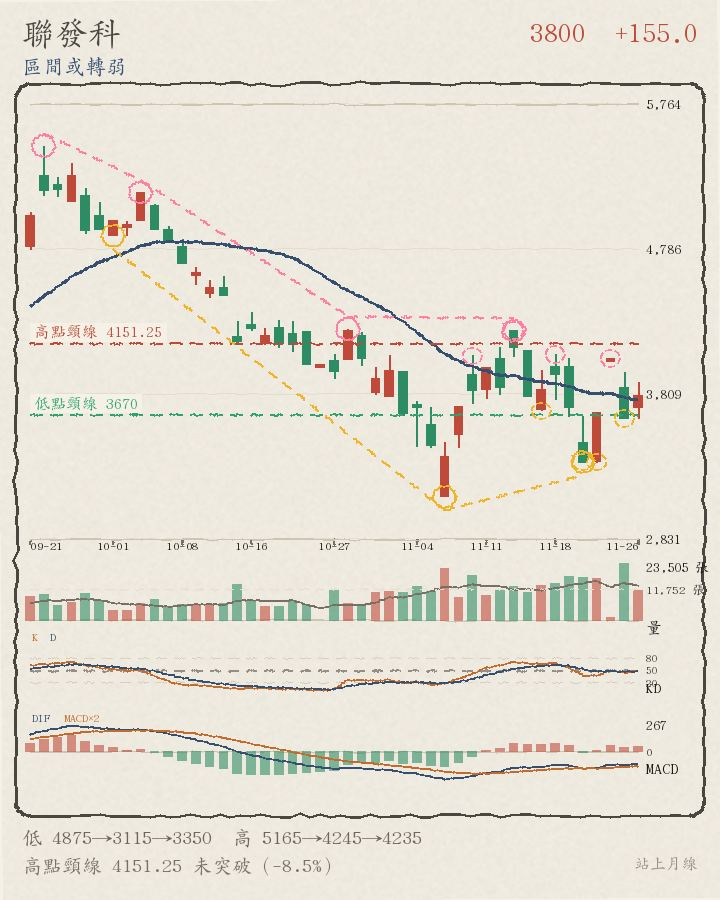
12:31 盤中 3845（+1.32%），比加權指數強 3.62 個百分點、跌破月線 3909.5，離高點頸線 4240 還差 9.3%，轉折還沒走出明顯方向。
- 月線位置：現價 3845 在月線 3909.5 之下（-1.6%）；5 日線 3917 也在月線之上（短均在上）；月線向下
- 量能：以已過交易時間推估，今天成交量約是 20 日均量的 1.38 倍（量增），比 20 日均量大不少；上漲又量增，量價配合
- 關鍵價位：高點頸線 4240 還沒突破，差 9.3%；前一交易日高點 4100（低於 6.2%）；今天盤中高點 3970（低於 3.1%）；今天盤中低點 3695（高於 4.1%）
- 轉折結構：低點 4430、4875、3115 與高點 5480、5165、4245 都沒有明顯遞增，屬於區間震盪或轉弱；還沒確認的轉折低點 11-06 3115、11-16 3795；還沒確認的轉折高點 11-10 4065、11-13 4235（圖上虛線小圈）
南亞 1303 上市
264 -10.0（-3.65%）
高點墊高、底部不穩 盤中成交值 264.16 億・全榜第 3 名（上市第 3 名）・相對大盤 -1.35
好條件 1/7：頭頭高
不好條件 5/7：今日下跌、相對大盤弱、在月線之下、跌破昨日低點、月線下彎

12:31 盤中 264（-3.65%），比加權指數弱 1.35 個百分點、跌破月線 290.975，離高點頸線 324.5 還差 18.6%，高點還在墊高（但底部沒同步墊高）。
- 月線位置：現價 264 在月線 290.975 之下（-9.3%）；5 日線 294.6 也在月線之上（短均在上）；月線向下
- 量能：以已過交易時間推估，今天成交量約是 20 日均量的 1.24 倍（量增），比 20 日均量大不少；下跌卻量增，量價背離
- 關鍵價位：高點頸線 324.5 還沒突破，差 18.6%；前一交易日高點 300.5（低於 12.1%）；今天盤中高點 278（低於 5.0%）；今天盤中低點 252（高於 4.8%）
- 轉折結構：高點 350.5、325.5、325 墊高（頭頭高），但低點 223、295、224.5 沒有同步墊高；還沒確認的轉折低點 11-06 224.5、11-16 274；還沒確認的轉折高點 11-02 308、11-12 325.5（圖上虛線小圈）
創意 3443 上市
6975 -775.0（-10.00%）
高點墊高、底部不穩 盤中成交值 232.27 億・全榜第 4 名（上市第 4 名）・相對大盤 -7.70
好條件 1/7：頭頭高
不好條件 5/7：今日下跌、相對大盤弱、在月線之下、跌破昨日低點、月線下彎

12:31 盤中 6975（-10.00%），比加權指數弱 7.70 個百分點、跌破月線 7470.25，離高點頸線 8537 還差 18.3%，高點還在墊高（但底部沒同步墊高）。
- 月線位置：現價 6975 在月線 7470.25 之下（-6.6%）；5 日線 7855 也在月線之上（短均在上）；月線向下
- 量能：以已過交易時間推估，今天成交量約是 20 日均量的 1.69 倍（爆量），比 20 日均量大不少；下跌卻量增，量價背離
- 關鍵價位：高點頸線 8537 還沒突破，差 18.3%；前一交易日高點 8500（低於 17.9%）；今天盤中高點 7175（低於 2.8%）；今天盤中低點 6975（高於 0.0%）
- 轉折結構：高點 8750、8490、8255 墊高（頭頭高），但低點 7065、7200、5765 沒有同步墊高；還沒確認的轉折低點 11-06 5765、11-16 7750；還沒確認的轉折高點 11-13 8645（圖上虛線小圈）
欣興 3037 上市
637 -70.0（-9.90%）
區間或轉弱 盤中成交值 212.27 億・全榜第 5 名（上市第 5 名）・相對大盤 -7.60
好條件 0/7：無
不好條件 6/7：跌破前低、今日下跌、相對大盤弱、在月線之下、跌破昨日低點、月線下彎
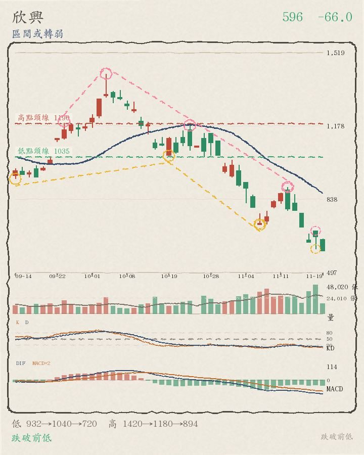
12:31 盤中 637（-9.90%），比加權指數弱 7.60 個百分點、跌破月線 934.05，離高點頸線 1012.5 還差 37.1%，轉折還沒走出明顯方向。
- 月線位置：現價 637 在月線 934.05 之下（-31.8%）；5 日線 795.2 也在月線之下（短均在下）；月線向下
- 量能：以已過交易時間推估，今天成交量約是 20 日均量的 1.75 倍（爆量），比 20 日均量大不少；下跌卻量增，量價背離
- 關鍵價位：已跌破前一個轉折低點；高點頸線 1012.5 還在現價上方 37.1%；前一交易日高點 774（低於 17.7%）；今天盤中高點 677（低於 5.9%）；今天盤中低點 637（高於 0.0%）
- 轉折結構：低點 932、1040、720 與高點 1200、1420、1180 都沒有明顯遞增，屬於區間震盪或轉弱；還沒確認的轉折低點 11-06 720、11-16 707；還沒確認的轉折高點 11-02 1020、11-12 894（圖上虛線小圈）
台達電 2308 上市
1040 -80.0（-7.14%）
高點墊高、底部不穩 盤中成交值 192.29 億・全榜第 6 名（上市第 6 名）・相對大盤 -4.84
好條件 1/7：頭頭高
不好條件 5/7：今日下跌、相對大盤弱、在月線之下、跌破昨日低點、月線下彎

12:31 盤中 1040（-7.14%），比加權指數弱 4.84 個百分點、跌破月線 1361.25，離高點頸線 1985 還差 47.6%，高點還在墊高（但底部沒同步墊高）。
- 月線位置：現價 1040 在月線 1361.25 之下（-23.6%）；5 日線 1234 也在月線之下（短均在下）；月線向下
- 量能：以已過交易時間推估，今天成交量約是 20 日均量的 1.56 倍（爆量），比 20 日均量大不少；下跌卻量增，量價背離
- 關鍵價位：高點頸線 1985 還沒突破，差 47.6%；前一交易日高點 1200（低於 13.3%）；今天盤中高點 1105（低於 5.9%）；今天盤中低點 1025（高於 1.5%）
- 轉折結構：高點 1885、1965、2115 墊高（頭頭高），但低點 1560、1810、1020 沒有同步墊高；還沒確認的轉折低點 11-11 1230、11-16 1120；還沒確認的轉折高點 11-12 1335（圖上虛線小圈）
國巨* 2327 上市
358.5 -15.5（-4.14%）
區間或轉弱 盤中成交值 162.35 億・全榜第 7 名（上市第 7 名）・相對大盤 -1.84
好條件 0/7：無
不好條件 6/7：跌破前低、今日下跌、相對大盤弱、在月線之下、跌破昨日低點、月線下彎
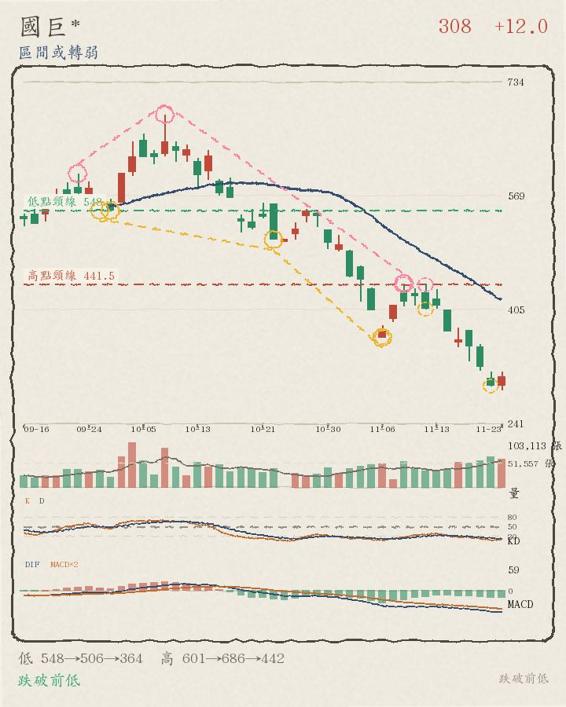
12:31 盤中 358.5（-4.14%），比加權指數弱 1.84 個百分點、跌破月線 467.45，離高點頸線 441.5 還差 18.8%，轉折還沒走出明顯方向。
- 月線位置：現價 358.5 在月線 467.45 之下（-23.3%）；5 日線 406.6 也在月線之下（短均在下）；月線向下
- 量能：以已過交易時間推估，今天成交量約是 20 日均量的 1.47 倍（量增），比 20 日均量大不少；下跌卻量增，量價背離
- 關鍵價位：已跌破前一個轉折低點；高點頸線 441.5 還在現價上方 18.8%；前一交易日高點 404（低於 11.3%）；今天盤中高點 378.5（低於 5.3%）；今天盤中低點 351.5（高於 2.0%）
- 轉折結構：低點 548、506、364.5 與高點 601、686、442 都沒有明顯遞增，屬於區間震盪或轉弱；還沒確認的轉折低點 11-12 405.5、11-16 374；還沒確認的轉折高點 11-10 442、11-12 441（圖上虛線小圈）
穩懋 3105 上櫃
477 -35.0（-6.84%）
區間或轉弱 盤中成交值 159.2 億・全榜第 8 名（上櫃第 1 名）・相對大盤 -4.54
好條件 0/7：無
不好條件 5/7：今日下跌、相對大盤弱、在月線之下、跌破昨日低點、月線下彎

12:31 盤中 477（-6.84%），比加權指數弱 4.54 個百分點、跌破月線 508.45，離高點頸線 580.33 還差 17.8%，轉折還沒走出明顯方向。
- 月線位置：現價 477 在月線 508.45 之下（-6.2%）；5 日線 520.5 也在月線之上（短均在上）；月線向下
- 量能：以已過交易時間推估，今天成交量約是 20 日均量的 1.65 倍（爆量），比 20 日均量大不少；下跌卻量增，量價背離
- 關鍵價位：高點頸線 580.33 還沒突破，差 17.8%；前一交易日高點 572（低於 16.6%）；今天盤中高點 507（低於 5.9%）；今天盤中低點 461.5（高於 3.4%）
- 轉折結構：低點 454、479、403.5 與高點 478、630、596 都沒有明顯遞增，屬於區間震盪或轉弱；還沒確認的轉折低點 11-09 403.5、11-16 512；還沒確認的轉折高點 11-12 573、11-16 572（圖上虛線小圈）
台光電 2383 上市
3465 -330.0（-8.70%）
區間或轉弱 盤中成交值 158.25 億・全榜第 9 名（上市第 8 名）・相對大盤 -6.40
好條件 0/7：無
不好條件 6/7：跌破前低、今日下跌、相對大盤弱、在月線之下、跌破昨日低點、月線下彎

12:31 盤中 3465（-8.70%），比加權指數弱 6.40 個百分點、跌破月線 4564.25，離高點頸線 5232.5 還差 33.8%，轉折還沒走出明顯方向。
- 月線位置：現價 3465 在月線 4564.25 之下（-24.1%）；5 日線 4196 也在月線之下（短均在下）；月線向下
- 量能：以已過交易時間推估，今天成交量約是 20 日均量的 1.57 倍（爆量），比 20 日均量大不少；下跌卻量增，量價背離
- 關鍵價位：已跌破前一個轉折低點；高點頸線 5232.5 還在現價上方 33.8%；前一交易日高點 4195（低於 17.4%）；今天盤中高點 3715（低於 6.7%）；今天盤中低點 3420（高於 1.3%）
- 轉折結構：低點 4855、4930、3690 與高點 5485、5295、4565 都沒有明顯遞增，屬於區間震盪或轉弱；還沒確認的轉折低點 11-12 4065、11-16 3795；還沒確認的轉折高點 11-02 4835、11-11 4565（圖上虛線小圈）
世芯-KY 3661 上市
3605 -55.0（-1.50%）
高點墊高、底部不穩 盤中成交值 138.76 億・全榜第 10 名（上市第 9 名）・相對大盤 +0.80
好條件 2/7：站上月線、頭頭高
不好條件 3/7：今日下跌、跌破昨日低點、月線下彎

12:31 盤中 3605（-1.50%），比加權指數強 0.80 個百分點、站上月線 3474.75，離高點頸線 3870 還差 6.8%，高點還在墊高（但底部沒同步墊高）。
- 月線位置：現價 3605 在月線 3474.75 之上（+3.8%）；5 日線 3685 也在月線之上（短均在上）；月線向下
- 量能：以已過交易時間推估，今天成交量約是 20 日均量的 2.34 倍（爆量），比 20 日均量大不少；下跌卻量增，量價背離
- 關鍵價位：高點頸線 3870 還沒突破，差 6.8%；前一交易日高點 4085（低於 11.8%）；今天盤中高點 3765（低於 4.2%）；今天盤中低點 3500（高於 3.0%）
- 轉折結構：高點 4490、3835、3825 墊高（頭頭高），但低點 3585、3260、2665 沒有同步墊高；還沒確認的轉折低點 11-06 2665、11-16 3650；還沒確認的轉折高點 11-16 4085（圖上虛線小圈）
南亞科 2408 上市
324 -16.0（-4.71%）
區間或轉弱 盤中成交值 132.49 億・全榜第 11 名（上市第 10 名）・相對大盤 -2.41
好條件 0/7：無
不好條件 5/7：今日下跌、相對大盤弱、在月線之下、跌破昨日低點、月線下彎

12:31 盤中 324（-4.71%），比加權指數弱 2.41 個百分點、跌破月線 409.3，離高點頸線 409.5 還差 20.9%，轉折還沒走出明顯方向。
- 月線位置：現價 324 在月線 409.3 之下（-20.8%）；5 日線 374.7 也在月線之下（短均在下）；月線向下
- 量能：以已過交易時間推估，今天成交量約是 20 日均量的 1.10 倍（量增），比 20 日均量大一些；下跌卻量增，量價背離
- 關鍵價位：高點頸線 409.5 還沒突破，差 20.9%；前一交易日高點 373（低於 13.1%）；今天盤中高點 344.5（低於 6.0%）；今天盤中低點 316（高於 2.5%）
- 轉折結構：低點 488、412、324 與高點 533、537、497.5 都沒有明顯遞增，屬於區間震盪或轉弱；還沒確認的轉折低點 11-06 324、11-16 339.5；還沒確認的轉折高點 11-10 402、11-12 417（圖上虛線小圈）
量增
↑ 回上方清單
日月光投控 3711 上市
519 -31.0（-5.64%）
區間或轉弱 盤中成交值 112.24 億・全榜第 12 名（上市第 11 名）・相對大盤 -3.34
好條件 0/7：無
不好條件 5/7：今日下跌、相對大盤弱、在月線之下、跌破昨日低點、月線下彎

12:31 盤中 519（-5.64%），比加權指數弱 3.34 個百分點、跌破月線 627.6，離高點頸線 700 還差 25.9%，轉折還沒走出明顯方向。
- 月線位置：現價 519 在月線 627.6 之下（-17.3%）；5 日線 591.2 也在月線之下（短均在下）；月線向下
- 量能：以已過交易時間推估，今天成交量約是 20 日均量的 1.21 倍（量增），比 20 日均量大不少；下跌卻量增，量價背離
- 關鍵價位：高點頸線 700 還沒突破，差 25.9%；前一交易日高點 590（低於 12.0%）；今天盤中高點 548（低於 5.3%）；今天盤中低點 506（高於 2.6%）
- 轉折結構：低點 715、639、515 與高點 765、699、709 都沒有明顯遞增，屬於區間震盪或轉弱；還沒確認的轉折低點 11-12 580、11-16 550；還沒確認的轉折高點 11-02 692、11-12 630（圖上虛線小圈）
量增
↑ 回上方清單
台玻 1802 上市
69 -7.6（-9.92%）
高點墊高、底部不穩 盤中成交值 103.67 億・全榜第 13 名（上市第 12 名）・相對大盤 -7.62
好條件 4/7：站上月線、月線向上、頭頭高、突破頸線
不好條件 3/7：今日下跌、相對大盤弱、跌破昨日低點

12:31 盤中 69（-9.92%），比加權指數弱 7.62 個百分點、站上月線 67.965，已突破高點頸線 62.47，高點還在墊高（但底部沒同步墊高）。
- 月線位置：現價 69 在月線 67.965 之上（+1.5%）；5 日線 77.98 也在月線之上（短均在上）；月線向上
- 量能：以已過交易時間推估，今天成交量約是 20 日均量的 1.00 倍（量平），跟 20 日均量差不多
- 關鍵價位：高點頸線 62.47 已站上；前一交易日高點 85（低於 18.8%）；今天盤中高點 75.5（低於 8.6%）；今天盤中低點 69（高於 0.0%）
- 轉折結構：高點 61.7、73.6、70 墊高（頭頭高），但低點 56.6、58.8、54.1 沒有同步墊高；還沒確認的轉折低點 11-06 54.1、11-16 76.6；還沒確認的轉折高點 11-03 70、11-13 89.5（圖上虛線小圈）
富喬 1815 上櫃
118 -13.0（-9.92%）
高點墊高、底部不穩 盤中成交值 103.38 億・全榜第 14 名（上櫃第 2 名）・相對大盤 -7.62
好條件 2/7：月線向上、頭頭高
不好條件 4/7：今日下跌、相對大盤弱、在月線之下、跌破昨日低點

12:31 盤中 118（-9.92%），比加權指數弱 7.62 個百分點、跌破月線 136.15，離高點頸線 144.33 還差 18.2%，高點還在墊高（但底部沒同步墊高）。
- 月線位置：現價 118 在月線 136.15 之下（-13.3%）；5 日線 135.7 也在月線之下（短均在下）；月線向上
- 量能：以已過交易時間推估，今天成交量約是 20 日均量的 0.85 倍（量平），比 20 日均量少一些
- 關鍵價位：高點頸線 144.33 還沒突破，差 18.2%；前一交易日高點 143.5（低於 17.8%）；今天盤中高點 127.5（低於 7.5%）；今天盤中低點 118（高於 0.0%）
- 轉折結構：高點 161.5、149、143.5 墊高（頭頭高），但低點 113、124、109.5 沒有同步墊高；還沒確認的轉折低點 11-06 109.5、11-16 129；還沒確認的轉折高點 11-10 140.5、11-12 150.5（圖上虛線小圈）
奇鋐 3017 上市
2480 -260.0（-9.49%）
區間或轉弱 盤中成交值 98.08 億・全榜第 15 名（上市第 13 名）・相對大盤 -7.19
好條件 0/7：無
不好條件 6/7：今日下跌、相對大盤弱、在月線之下、貼近今日低點（1% 內）、跌破昨日低點、月線下彎
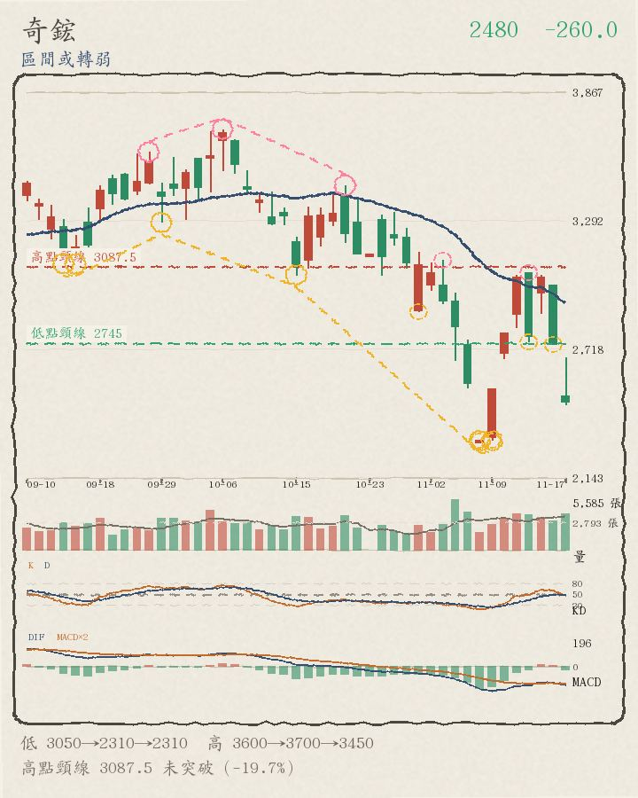
12:31 盤中 2480（-9.49%），比加權指數弱 7.19 個百分點、跌破月線 2966.5，離高點頸線 3087.5 還差 19.7%，轉折還沒走出明顯方向。
- 月線位置：現價 2480 在月線 2966.5 之下（-16.4%）；5 日線 2877 也在月線之下（短均在下）；月線向下
- 量能：以已過交易時間推估，今天成交量約是 20 日均量的 1.66 倍（爆量），比 20 日均量大不少；下跌卻量增，量價背離
- 關鍵價位：高點頸線 3087.5 還沒突破，差 19.7%；前一交易日高點 3005（低於 17.5%）；今天盤中高點 2680（低於 7.5%）；今天盤中低點 2470（高於 0.4%）
- 轉折結構：低點 3050、2310、2310 與高點 3600、3700、3450 都沒有明顯遞增，屬於區間震盪或轉弱；還沒確認的轉折低點 11-12 2750、11-16 2740；還沒確認的轉折高點 11-03 3115、11-12 3060（圖上虛線小圈）
大立光 3008 上市
4460 -320.0（-6.69%）
區間或轉弱 盤中成交值 91.56 億・全榜第 16 名（上市第 14 名）・相對大盤 -4.39
好條件 0/7：無
不好條件 5/7：今日下跌、相對大盤弱、在月線之下、跌破昨日低點、月線下彎

12:31 盤中 4460（-6.69%），比加權指數弱 4.39 個百分點、跌破月線 5461.5，轉折還沒走出明顯方向。
- 月線位置：現價 4460 在月線 5461.5 之下（-18.3%）；5 日線 5107 也在月線之下（短均在下）；月線向下
- 量能：以已過交易時間推估，今天成交量約是 20 日均量的 1.06 倍（量平），比 20 日均量大一些
- 關鍵價位：前一交易日高點 5140（低於 13.2%）；今天盤中高點 4705（低於 5.2%）；今天盤中低點 4355（高於 2.4%）
- 轉折結構：低點 6355、5970、4075 與高點 6750、7460、6370 都沒有明顯遞增，屬於區間震盪或轉弱；還沒確認的轉折低點 11-06 4075、11-16 4780；還沒確認的轉折高點 11-13 5560（圖上虛線小圈）
量平
↑ 回上方清單
健策 3653 上市
4335 -480.0（-9.97%）
區間或轉弱 盤中成交值 85.01 億・全榜第 17 名（上市第 15 名）・相對大盤 -7.67
好條件 0/7：無
不好條件 6/7：跌破前低、今日下跌、相對大盤弱、在月線之下、跌破昨日低點、月線下彎

12:31 盤中 4335（-9.97%），比加權指數弱 7.67 個百分點、跌破月線 6004.5，離高點頸線 6536.67 還差 33.7%，轉折還沒走出明顯方向。
- 月線位置：現價 4335 在月線 6004.5 之下（-27.8%）；5 日線 5556 也在月線之下（短均在下）；月線向下
- 量能：以已過交易時間推估，今天成交量約是 20 日均量的 1.13 倍（量增），比 20 日均量大一些；下跌卻量增，量價背離
- 關鍵價位：已跌破前一個轉折低點；高點頸線 6536.67 還在現價上方 33.7%；前一交易日高點 5335（低於 18.7%）；今天盤中高點 4445（低於 2.5%）；今天盤中低點 4335（高於 0.0%）
- 轉折結構：低點 6760、5710、4970 與高點 6655、6595、6360 都沒有明顯遞增，屬於區間震盪或轉弱；還沒確認的轉折低點 11-09 4970、11-16 4815；還沒確認的轉折高點 11-04 6595、11-11 6360（圖上虛線小圈）
聯電 2303 上市
91.6 -3.6（-3.78%）
區間或轉弱 盤中成交值 84.25 億・全榜第 18 名（上市第 16 名）・相對大盤 -1.48
好條件 0/7：無
不好條件 5/7：今日下跌、相對大盤弱、在月線之下、跌破昨日低點、月線下彎

12:31 盤中 91.6（-3.78%），比加權指數弱 1.48 個百分點、跌破月線 111.14，離高點頸線 166.75 還差 45.1%，轉折還沒走出明顯方向。
- 月線位置：現價 91.6 在月線 111.14 之下（-17.6%）；5 日線 100.44 也在月線之下（短均在下）；月線向下
- 量能：以已過交易時間推估，今天成交量約是 20 日均量的 0.81 倍（量平），比 20 日均量少很多
- 關鍵價位：高點頸線 166.75 還沒突破，差 45.1%；前一交易日高點 101.5（低於 9.8%）；今天盤中高點 95.8（低於 4.4%）；今天盤中低點 90.2（高於 1.6%）
- 轉折結構：低點 135、151.5、88.6 與高點 145.5、168.5、165 都沒有明顯遞增，屬於區間震盪或轉弱；還沒確認的轉折低點 11-06 88.6、11-16 95；還沒確認的轉折高點 11-12 107.5（圖上虛線小圈）
量平
↑ 回上方清單
金像電 2368 上市
835 -92.0（-9.92%）
區間或轉弱 盤中成交值 81.09 億・全榜第 19 名（上市第 17 名）・相對大盤 -7.62
好條件 0/7：無
不好條件 5/7：今日下跌、相對大盤弱、在月線之下、跌破昨日低點、月線下彎
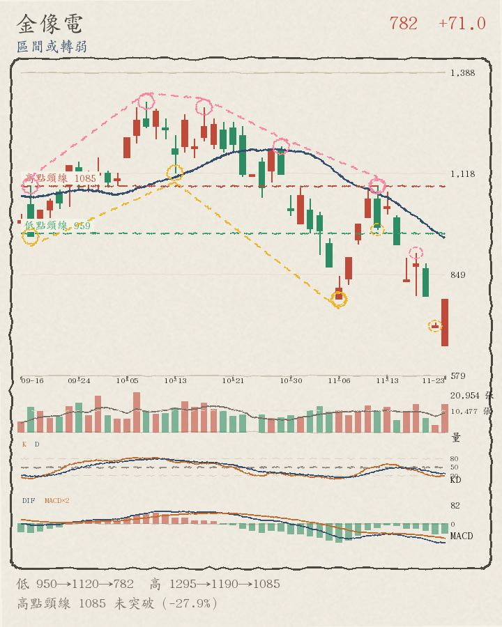
12:31 盤中 835（-9.92%），比加權指數弱 7.62 個百分點、跌破月線 1039.7，離高點頸線 1083.33 還差 22.9%，轉折還沒走出明顯方向。
- 月線位置：現價 835 在月線 1039.7 之下（-19.7%）；5 日線 993 也在月線之下（短均在下）；月線向下
- 量能：以已過交易時間推估，今天成交量約是 20 日均量的 1.19 倍（量增），比 20 日均量大不少；下跌卻量增，量價背離
- 關鍵價位：高點頸線 1083.33 還沒突破，差 22.9%；前一交易日高點 1005（低於 16.9%）；今天盤中高點 893（低於 6.5%）；今天盤中低點 835（高於 0.0%）
- 轉折結構：低點 950、1120、782 與高點 1310、1295、1190 都沒有明顯遞增，屬於區間震盪或轉弱；還沒確認的轉折低點 11-12 968、11-16 927；還沒確認的轉折高點 11-02 1080、11-12 1085（圖上虛線小圈）
量增
↑ 回上方清單
鴻海 2317 上市
218.5 +0.0（+0.00%）
區間或轉弱 盤中成交值 79.86 億・全榜第 20 名（上市第 18 名）・相對大盤 +2.30
好條件 0/7：無
不好條件 2/7：在月線之下、月線下彎

12:31 盤中 218.5（+0.00%），比加權指數強 2.30 個百分點、跌破月線 241.575，離高點頸線 255.3 還差 14.4%，轉折還沒走出明顯方向。
- 月線位置：現價 218.5 在月線 241.575 之下（-9.6%）；5 日線 236.6 也在月線之下（短均在下）；月線向下
- 量能：以已過交易時間推估，今天成交量約是 20 日均量的 1.11 倍（量增），比 20 日均量大一些
- 關鍵價位：高點頸線 255.3 還沒突破，差 14.4%；前一交易日高點 238（低於 8.2%）；今天盤中高點 227.5（低於 4.0%）；今天盤中低點 215（高於 1.6%）
- 轉折結構：低點 247、237、212.5 與高點 266.5、253.5、247.5 都沒有明顯遞增，屬於區間震盪或轉弱；還沒確認的轉折低點 11-11 236、11-16 217.5；還沒確認的轉折高點 11-10 247.5、11-12 245（圖上虛線小圈）
量增
↑ 回上方清單
臻鼎-KY 4958 上市
365 -31.0（-7.83%）
區間或轉弱 盤中成交值 76.82 億・全榜第 21 名（上市第 19 名）・相對大盤 -5.53
好條件 0/7：無
不好條件 6/7：今日下跌、相對大盤弱、在月線之下、貼近今日低點（1% 內）、跌破昨日低點、月線下彎

12:31 盤中 365（-7.83%），比加權指數弱 5.53 個百分點、跌破月線 478.375，離高點頸線 502 還差 27.3%，轉折還沒走出明顯方向。
- 月線位置：現價 365 在月線 478.375 之下（-23.7%）；5 日線 431.5 也在月線之下（短均在下）；月線向下
- 量能：以已過交易時間推估，今天成交量約是 20 日均量的 0.96 倍（量平），跟 20 日均量差不多
- 關鍵價位：高點頸線 502 還沒突破，差 27.3%；前一交易日高點 436（低於 16.3%）；今天盤中高點 388（低於 5.9%）；今天盤中低點 361.5（高於 1.0%）
- 轉折結構：低點 463.5、518、355 與高點 505、613、614 都沒有明顯遞增，屬於區間震盪或轉弱；還沒確認的轉折低點 11-12 429、11-16 396；還沒確認的轉折高點 11-02 499、11-12 466.5（圖上虛線小圈）
量平
↑ 回上方清單
聯茂 6213 上市
432 -48.0（-10.00%）
高點墊高、底部不穩 盤中成交值 71.34 億・全榜第 22 名（上市第 20 名）・相對大盤 -7.70
好條件 1/7：頭頭高
不好條件 6/7：跌破前低、今日下跌、相對大盤弱、在月線之下、跌破昨日低點、月線下彎

12:31 盤中 432（-10.00%），比加權指數弱 7.70 個百分點、跌破月線 646.9，離高點頸線 595 還差 27.4%，高點還在墊高（但底部沒同步墊高）。
- 月線位置：現價 432 在月線 646.9 之下（-33.2%）；5 日線 528.6 也在月線之下（短均在下）；月線向下
- 量能：以已過交易時間推估，今天成交量約是 20 日均量的 1.16 倍（量增），比 20 日均量大不少；下跌卻量增，量價背離
- 關鍵價位：已跌破前一個轉折低點；高點頸線 595 還在現價上方 27.4%；前一交易日高點 519（低於 16.8%）；今天盤中高點 460.5（低於 6.2%）；今天盤中低點 432（高於 0.0%）
- 轉折結構：高點 555、858、885 墊高（頭頭高），但低點 731、721、481.5 沒有同步墊高；還沒確認的轉折低點 11-12 522、11-16 480；還沒確認的轉折高點 11-10 584、11-12 602（圖上虛線小圈）
景碩 3189 上市
542 -60.0（-9.97%）
區間或轉弱 盤中成交值 65.74 億・全榜第 23 名（上市第 21 名）・相對大盤 -7.67
好條件 0/7：無
不好條件 6/7：跌破前低、今日下跌、相對大盤弱、在月線之下、跌破昨日低點、月線下彎
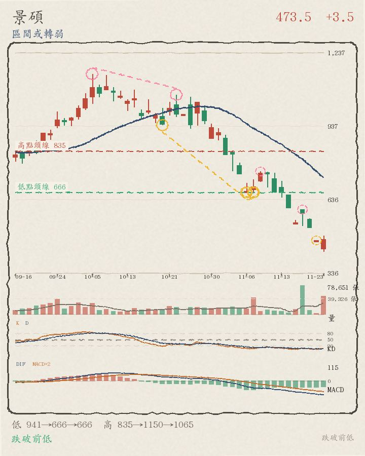
12:31 盤中 542（-9.97%），比加權指數弱 7.67 個百分點、跌破月線 842.55，離高點頸線 835 還差 35.1%，轉折還沒走出明顯方向。
- 月線位置：現價 542 在月線 842.55 之下（-35.7%）；5 日線 684.6 也在月線之下（短均在下）；月線向下
- 量能：以已過交易時間推估，今天成交量約是 20 日均量的 0.93 倍（量平），比 20 日均量少一些
- 關鍵價位：已跌破前一個轉折低點；高點頸線 835 還在現價上方 35.1%；前一交易日高點 655（低於 17.3%）；今天盤中高點 553（低於 2.0%）；今天盤中低點 542（高於 0.0%）
- 轉折結構：低點 941、666、666 與高點 835、1150、1065 都沒有明顯遞增，屬於區間震盪或轉弱；還沒確認的轉折低點 11-09 666、11-16 602；還沒確認的轉折高點 11-10 752（圖上虛線小圈）
華通 2313 上市
183.5 -9.5（-4.92%）
高點墊高、底部不穩 盤中成交值 63.31 億・全榜第 24 名（上市第 22 名）・相對大盤 -2.62
好條件 1/7：頭頭高
不好條件 5/7：今日下跌、相對大盤弱、在月線之下、跌破昨日低點、月線下彎
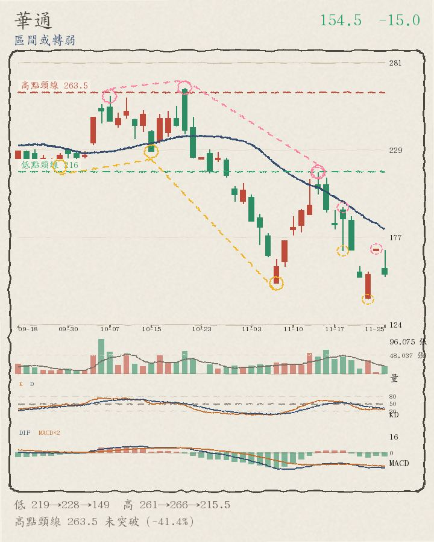
12:31 盤中 183.5（-4.92%），比加權指數弱 2.62 個百分點、跌破月線 203.925，離高點頸線 212.25 還差 13.5%，高點還在墊高（但底部沒同步墊高）。
- 月線位置：現價 183.5 在月線 203.925 之下（-10.0%）；5 日線 193.9 也在月線之下（短均在下）；月線向下
- 量能：以已過交易時間推估，今天成交量約是 20 日均量的 1.44 倍（量增），比 20 日均量大不少；下跌卻量增，量價背離
- 關鍵價位：高點頸線 212.25 還沒突破，差 13.5%；前一交易日高點 212（低於 13.4%）；今天盤中高點 192.5（低於 4.7%）；今天盤中低點 181.5（高於 1.1%）
- 轉折結構：高點 235、261、266 墊高（頭頭高），但低點 219、228、149 沒有同步墊高；還沒確認的轉折低點 11-06 149、11-16 191.5；還沒確認的轉折高點 11-02 209、11-13 215.5（圖上虛線小圈）
聯亞 3081 上櫃
1710 -190.0（-10.00%）
區間或轉弱 盤中成交值 62.3 億・全榜第 25 名（上櫃第 3 名）・相對大盤 -7.70
好條件 0/7：無
不好條件 5/7：今日下跌、相對大盤弱、在月線之下、跌破昨日低點、月線下彎

12:31 盤中 1710（-10.00%），比加權指數弱 7.70 個百分點、跌破月線 2257.75，離高點頸線 2940 還差 41.8%，轉折還沒走出明顯方向。
- 月線位置：現價 1710 在月線 2257.75 之下（-24.3%）；5 日線 2088 也在月線之下（短均在下）；月線向下
- 量能：以已過交易時間推估，今天成交量約是 20 日均量的 1.40 倍（量增），比 20 日均量大不少；下跌卻量增，量價背離
- 關鍵價位：高點頸線 2940 還沒突破，差 41.8%；前一交易日高點 2015（低於 15.1%）；今天盤中高點 1795（低於 4.7%）；今天盤中低點 1710（高於 0.0%）
- 轉折結構：低點 2585、2365、1705 與高點 2950、3210、2795 都沒有明顯遞增，屬於區間震盪或轉弱；還沒確認的轉折低點 11-06 1705、11-16 1900；還沒確認的轉折高點 11-02 2465、11-12 2320（圖上虛線小圈）
量增
↑ 回上方清單
京元電子 2449 上市
174.5 -18.0（-9.35%）
區間或轉弱 盤中成交值 61.67 億・全榜第 26 名（上市第 23 名）・相對大盤 -7.05
好條件 0/7：無
不好條件 7/7：跌破前低、今日下跌、相對大盤弱、在月線之下、貼近今日低點（1% 內）、跌破昨日低點、月線下彎

12:31 盤中 174.5（-9.35%），比加權指數弱 7.05 個百分點、跌破月線 244.15，離高點頸線 284 還差 38.6%，轉折還沒走出明顯方向。
- 月線位置：現價 174.5 在月線 244.15 之下（-28.5%）；5 日線 215.7 也在月線之下（短均在下）；月線向下
- 量能：以已過交易時間推估，今天成交量約是 20 日均量的 2.11 倍（爆量），比 20 日均量大不少；下跌卻量增，量價背離
- 關鍵價位：已跌破前一個轉折低點；高點頸線 284 還在現價上方 38.6%；前一交易日高點 205（低於 14.9%）；今天盤中高點 188.5（低於 7.4%）；今天盤中低點 173.5（高於 0.6%）
- 轉折結構：低點 284、255、201 與高點 330、310、284.5 都沒有明顯遞增，屬於區間震盪或轉弱；還沒確認的轉折低點 11-09 201、11-16 192.5；還沒確認的轉折高點 11-02 263、11-12 235（圖上虛線小圈）
台燿 6274 上櫃
790 -87.0（-9.92%）
區間或轉弱 盤中成交值 58.75 億・全榜第 27 名（上櫃第 4 名）・相對大盤 -7.62
好條件 0/7：無
不好條件 6/7：跌破前低、今日下跌、相對大盤弱、在月線之下、跌破昨日低點、月線下彎

12:31 盤中 790（-9.92%），比加權指數弱 7.62 個百分點、跌破月線 1198.35，離高點頸線 1446.67 還差 45.4%，轉折還沒走出明顯方向。
- 月線位置：現價 790 在月線 1198.35 之下（-34.1%）；5 日線 969.8 也在月線之下（短均在下）；月線向下
- 量能：以已過交易時間推估，今天成交量約是 20 日均量的 0.73 倍（量平），比 20 日均量少很多
- 關鍵價位：已跌破前一個轉折低點；高點頸線 1446.67 還在現價上方 45.4%；前一交易日高點 962（低於 17.9%）；今天盤中高點 824（低於 4.1%）；今天盤中低點 790（高於 0.0%）
- 轉折結構：低點 1295、1275、897 與高點 1460、1835、1450 都沒有明顯遞增，屬於區間震盪或轉弱；還沒確認的轉折低點 11-12 954、11-16 877；還沒確認的轉折高點 11-12 1080（圖上虛線小圈）
華邦電 2344 上市
109.5 -3.5（-3.10%）
區間或轉弱 盤中成交值 57.72 億・全榜第 28 名（上市第 24 名）・相對大盤 -0.80
好條件 0/7：無
不好條件 6/7：跌破前低、今日下跌、相對大盤弱、在月線之下、跌破昨日低點、月線下彎

12:31 盤中 109.5（-3.10%），比加權指數弱 0.80 個百分點、跌破月線 145.675，離高點頸線 141.5 還差 22.6%，轉折還沒走出明顯方向。
- 月線位置：現價 109.5 在月線 145.675 之下（-24.8%）；5 日線 127.4 也在月線之下（短均在下）；月線向下
- 量能：以已過交易時間推估，今天成交量約是 20 日均量的 1.05 倍（量平），比 20 日均量大一些
- 關鍵價位：已跌破前一個轉折低點；高點頸線 141.5 還在現價上方 22.6%；前一交易日高點 123.5（低於 11.3%）；今天盤中高點 114（低於 3.9%）；今天盤中低點 104（高於 5.3%）
- 轉折結構：低點 151、151、115 與高點 184、178.5、142 都沒有明顯遞增，屬於區間震盪或轉弱；還沒確認的轉折低點 11-11 127、11-16 112.5；還沒確認的轉折高點 11-10 142、11-12 141（圖上虛線小圈）
友達 2409 上市
27.45 -0.2（-0.90%）
區間或轉弱 盤中成交值 57.38 億・全榜第 29 名（上市第 25 名）・相對大盤 +1.40
好條件 0/7：無
不好條件 4/7：今日下跌、在月線之下、跌破昨日低點、月線下彎

12:31 盤中 27.45（-0.90%），比加權指數強 1.40 個百分點、跌破月線 31.425，離高點頸線 37.03 還差 25.9%，轉折還沒走出明顯方向。
- 月線位置：現價 27.45 在月線 31.425 之下（-12.7%）；5 日線 28.73 也在月線之下（短均在下）；月線向下
- 量能：以已過交易時間推估，今天成交量約是 20 日均量的 0.97 倍（量平），跟 20 日均量差不多
- 關鍵價位：高點頸線 37.03 還沒突破，差 25.9%；前一交易日高點 30（低於 8.5%）；今天盤中高點 28.45（低於 3.5%）；今天盤中低點 26.1（高於 5.2%）
- 轉折結構：低點 33.75、34.45、24.55 與高點 43.55、37.8、36.65 都沒有明顯遞增，屬於區間震盪或轉弱；還沒確認的轉折低點 11-06 24.55、11-16 27.5；還沒確認的轉折高點 11-10 29.25、11-12 31.5（圖上虛線小圈）
量平
↑ 回上方清單
精材 3374 上櫃
421 -46.5（-9.95%）
高點墊高、底部不穩 盤中成交值 55.83 億・全榜第 30 名（上櫃第 5 名）・相對大盤 -7.65
好條件 2/7：月線向上、頭頭高
不好條件 4/7：今日下跌、相對大盤弱、在月線之下、跌破昨日低點

12:31 盤中 421（-9.95%），比加權指數弱 7.65 個百分點、跌破月線 454.1，離高點頸線 520.67 還差 19.1%，高點還在墊高（但底部沒同步墊高）。
- 月線位置：現價 421 在月線 454.1 之下（-7.3%）；5 日線 469.9 也在月線之上（短均在上）；月線向上
- 量能：以已過交易時間推估，今天成交量約是 20 日均量的 1.19 倍（量增），比 20 日均量大不少；下跌卻量增，量價背離
- 關鍵價位：高點頸線 520.67 還沒突破，差 19.1%；前一交易日高點 493.5（低於 14.7%）；今天盤中高點 435（低於 3.2%）；今天盤中低點 421（高於 0.0%）
- 轉折結構：高點 487、530、513 墊高（頭頭高），但低點 436.5、399、362.5 沒有同步墊高；還沒確認的轉折低點 11-06 362.5、11-16 467.5；還沒確認的轉折高點 11-13 519（圖上虛線小圈）
南電 8046 上市
792 -88.0（-10.00%）
區間或轉弱 盤中成交值 55.12 億・全榜第 31 名（上市第 26 名）・相對大盤 -7.70
好條件 0/7：無
不好條件 6/7：跌破前低、今日下跌、相對大盤弱、在月線之下、跌破昨日低點、月線下彎

12:31 盤中 792（-10.00%），比加權指數弱 7.70 個百分點、跌破月線 1128.95，離高點頸線 1102.5 還差 28.2%，轉折還沒走出明顯方向。
- 月線位置：現價 792 在月線 1128.95 之下（-29.9%）；5 日線 982.8 也在月線之下（短均在下）；月線向下
- 量能：以已過交易時間推估，今天成交量約是 20 日均量的 0.88 倍（量平），比 20 日均量少一些
- 關鍵價位：已跌破前一個轉折低點；高點頸線 1102.5 還在現價上方 28.2%；前一交易日高點 966（低於 18.0%）；今天盤中高點 823（低於 3.8%）；今天盤中低點 792（高於 0.0%）
- 轉折結構：低點 1025、1050、867 與高點 1560、1400、1080 都沒有明顯遞增，屬於區間震盪或轉弱；還沒確認的轉折低點 11-12 972、11-16 880；還沒確認的轉折高點 11-02 1220、11-11 1080（圖上虛線小圈）
智邦 2345 上市
1320 -60.0（-4.35%）
區間或轉弱 盤中成交值 53.97 億・全榜第 32 名（上市第 27 名）・相對大盤 -2.05
好條件 0/7：無
不好條件 5/7：今日下跌、相對大盤弱、在月線之下、跌破昨日低點、月線下彎

12:31 盤中 1320（-4.35%），比加權指數弱 2.05 個百分點、跌破月線 1624.25，轉折還沒走出明顯方向。
- 月線位置：現價 1320 在月線 1624.25 之下（-18.7%）；5 日線 1509 也在月線之下（短均在下）；月線向下
- 量能：以已過交易時間推估，今天成交量約是 20 日均量的 1.23 倍（量增），比 20 日均量大不少；下跌卻量增，量價背離
- 關鍵價位：前一交易日高點 1505（低於 12.3%）；今天盤中高點 1365（低於 3.3%）；今天盤中低點 1290（高於 2.3%）
- 轉折結構：低點 1970、1910、1245 與高點 2145、2055、1875 都沒有明顯遞增，屬於區間震盪或轉弱；還沒確認的轉折低點 11-06 1245、11-16 1370；還沒確認的轉折高點 11-12 1665（圖上虛線小圈）
量增
↑ 回上方清單
信驊 5274 上櫃
9895 -905.0（-8.38%）
區間或轉弱 盤中成交值 52.94 億・全榜第 33 名（上櫃第 6 名）・相對大盤 -6.08
好條件 0/7：無
不好條件 6/7：跌破前低、今日下跌、相對大盤弱、在月線之下、跌破昨日低點、月線下彎

12:31 盤中 9895（-8.38%），比加權指數弱 6.08 個百分點、跌破月線 14301，轉折還沒走出明顯方向。
- 月線位置：現價 9895 在月線 14301 之下（-30.8%）；5 日線 11849 也在月線之下（短均在下）；月線向下
- 量能：以已過交易時間推估，今天成交量約是 20 日均量的 1.64 倍（爆量），比 20 日均量大不少；下跌卻量增，量價背離
- 關鍵價位：前一交易日高點 11875（低於 16.7%）；今天盤中高點 10220（低於 3.2%）；今天盤中低點 9720（高於 1.8%）
- 轉折結構：低點 15975、15500、10710 與高點 19895、18465、17490 都沒有明顯遞增，屬於區間震盪或轉弱；還沒確認的轉折低點 11-10 10710、11-16 10800；還沒確認的轉折高點 11-09 11990、11-12 13375（圖上虛線小圈）
華新科 2492 上市
232 -25.5（-9.90%）
區間或轉弱 盤中成交值 51.25 億・全榜第 34 名（上市第 28 名）・相對大盤 -7.60
好條件 0/7：無
不好條件 6/7：跌破前低、今日下跌、相對大盤弱、在月線之下、跌破昨日低點、月線下彎

12:31 盤中 232（-9.90%），比加權指數弱 7.60 個百分點、跌破月線 332.675，離高點頸線 428.33 還差 45.8%，轉折還沒走出明顯方向。
- 月線位置：現價 232 在月線 332.675 之下（-30.3%）；5 日線 278.4 也在月線之下（短均在下）；月線向下
- 量能：以已過交易時間推估，今天成交量約是 20 日均量的 0.97 倍（量平），跟 20 日均量差不多
- 關鍵價位：已跌破前一個轉折低點；高點頸線 428.33 還在現價上方 45.8%；前一交易日高點 281.5（低於 17.6%）；今天盤中高點 249.5（低於 7.0%）；今天盤中低點 232（高於 0.0%）
- 轉折結構：低點 376.5、355.5、253.5 與高點 422、431.5、307 都沒有明顯遞增，屬於區間震盪或轉弱；還沒確認的轉折低點 11-12 272、11-16 257.5；還沒確認的轉折高點 11-11 307（圖上虛線小圈）
緯創 3231 上市
157.5 -1.5（-0.94%）
高點墊高、底部不穩 盤中成交值 49.95 億・全榜第 35 名（上市第 29 名）・相對大盤 +1.36
好條件 1/7：頭頭高
不好條件 3/7：今日下跌、在月線之下、月線下彎
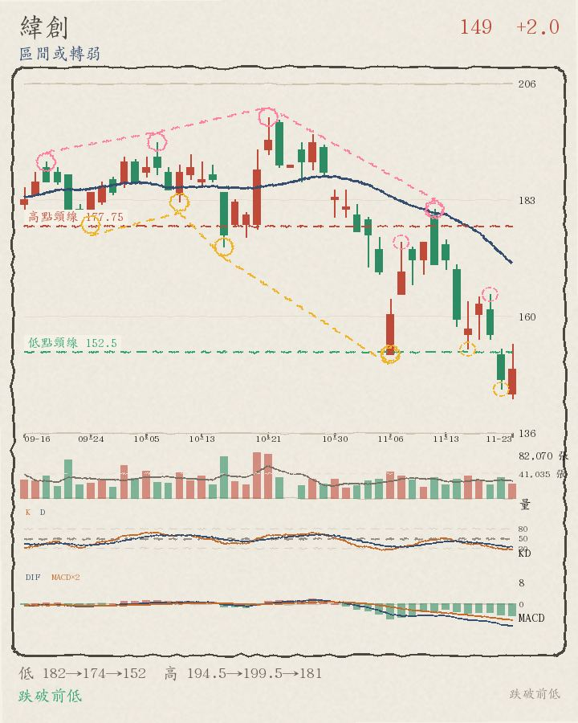
12:31 盤中 157.5（-0.94%），比加權指數強 1.36 個百分點、跌破月線 178.875，離高點頸線 183 還差 13.9%，高點還在墊高（但底部沒同步墊高）。
- 月線位置：現價 157.5 在月線 178.875 之下（-11.9%）；5 日線 169.1 也在月線之下（短均在下）；月線向下
- 量能：以已過交易時間推估，今天成交量約是 20 日均量的 1.15 倍（量增），比 20 日均量大不少；下跌卻量增，量價背離
- 關鍵價位：高點頸線 183 還沒突破，差 13.9%；前一交易日高點 170（低於 7.4%）；今天盤中高點 162.5（低於 3.1%）；今天盤中低點 153（高於 2.9%）
- 轉折結構：高點 190.5、194.5、199.5 墊高（頭頭高），但低點 182.5、173.5、152 沒有同步墊高；還沒確認的轉折低點 11-06 152、11-16 157.5；還沒確認的轉折高點 11-09 174.5、11-12 181（圖上虛線小圈）
昇達科 3491 上櫃
1380 -25.0（-1.78%）
高點墊高、底部不穩 盤中成交值 49.5 億・全榜第 36 名（上櫃第 7 名）・相對大盤 +0.52
好條件 2/7：站上月線、頭頭高
不好條件 2/7：今日下跌、月線下彎

12:31 盤中 1380（-1.78%），比加權指數強 0.52 個百分點、站上月線 1310.75，離高點頸線 1595 還差 13.5%，高點還在墊高（但底部沒同步墊高）。
- 月線位置：現價 1380 在月線 1310.75 之上（+5.3%）；5 日線 1406 也在月線之上（短均在上）；月線向下
- 量能：以已過交易時間推估，今天成交量約是 20 日均量的 3.18 倍（爆量），比 20 日均量大不少；下跌卻量增，量價背離
- 關鍵價位：高點頸線 1595 還沒突破，差 13.5%；前一交易日高點 1530（低於 9.8%）；今天盤中高點 1440（低於 4.2%）；今天盤中低點 1315（高於 4.9%）
- 轉折結構：高點 1630、1760、1470 墊高（頭頭高），但低點 1450、1315、1065 沒有同步墊高；還沒確認的轉折低點 11-06 1065、11-16 1380；還沒確認的轉折高點 11-03 1330、11-12 1575（圖上虛線小圈）
旺矽 6223 上櫃
3985 -320.0（-7.43%）
區間或轉弱 盤中成交值 49.25 億・全榜第 37 名（上櫃第 8 名）・相對大盤 -5.13
好條件 0/7：無
不好條件 5/7：今日下跌、相對大盤弱、在月線之下、跌破昨日低點、月線下彎
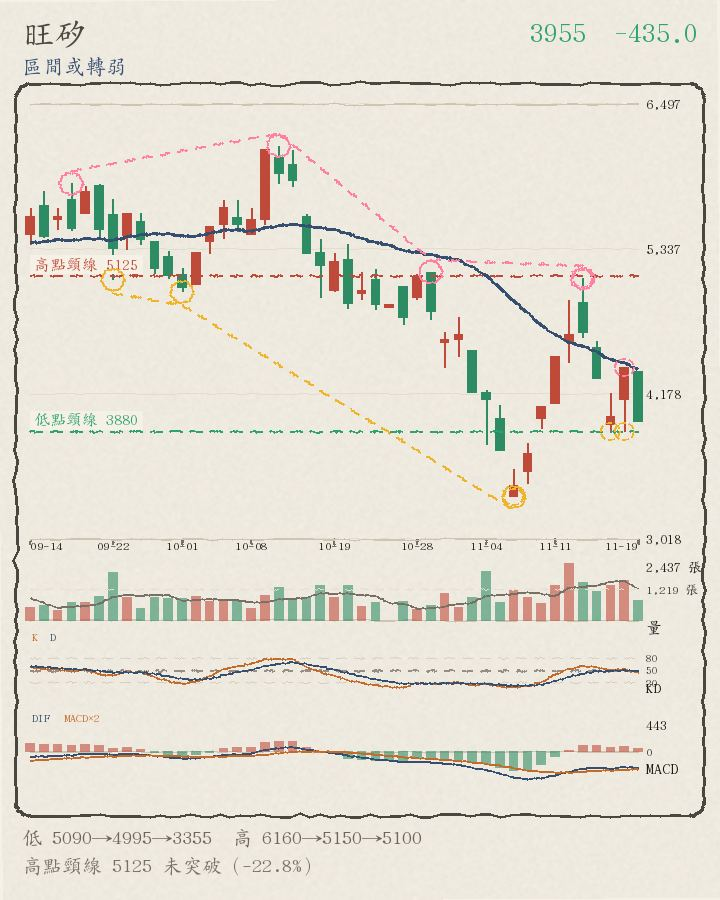
12:31 盤中 3985（-7.43%），比加權指數弱 5.13 個百分點、跌破月線 4515.75，離高點頸線 5125 還差 22.2%，轉折還沒走出明顯方向。
- 月線位置：現價 3985 在月線 4515.75 之下（-11.8%）；5 日線 4437 也在月線之下（短均在下）；月線向下
- 量能：以已過交易時間推估，今天成交量約是 20 日均量的 1.43 倍（量增），比 20 日均量大不少；下跌卻量增，量價背離
- 關鍵價位：高點頸線 5125 還沒突破，差 22.2%；前一交易日高點 4600（低於 13.4%）；今天盤中高點 4185（低於 4.8%）；今天盤中低點 3880（高於 2.7%）
- 轉折結構：低點 5090、4995、3355 與高點 5860、6160、5150 都沒有明顯遞增，屬於區間震盪或轉弱；還沒確認的轉折低點 11-06 3355、11-16 4305；還沒確認的轉折高點 11-02 4790、11-13 5100（圖上虛線小圈）
量增
↑ 回上方清單
群聯 8299 上櫃
1495 -20.0（-1.32%）
區間或轉弱 盤中成交值 48.99 億・全榜第 38 名（上櫃第 9 名）・相對大盤 +0.98
好條件 0/7：無
不好條件 4/7：今日下跌、在月線之下、跌破昨日低點、月線下彎

12:31 盤中 1495（-1.32%），比加權指數強 0.98 個百分點、跌破月線 1774.5，離高點頸線 1762.5 還差 15.2%，轉折還沒走出明顯方向。
- 月線位置：現價 1495 在月線 1774.5 之下（-15.8%）；5 日線 1639 也在月線之下（短均在下）；月線向下
- 量能：以已過交易時間推估，今天成交量約是 20 日均量的 1.31 倍（量增），比 20 日均量大不少；下跌卻量增，量價背離
- 關鍵價位：高點頸線 1762.5 還沒突破，差 15.2%；前一交易日高點 1620（低於 7.7%）；今天盤中高點 1560（低於 4.2%）；今天盤中低點 1430（高於 4.5%）
- 轉折結構：低點 1785、1865、1405 與高點 2160、2350、2090 都沒有明顯遞增，屬於區間震盪或轉弱；還沒確認的轉折低點 11-12 1635、11-16 1515；還沒確認的轉折高點 11-10 1760、11-12 1765（圖上虛線小圈）
量增
↑ 回上方清單
致茂 2360 上市
1135 -125.0（-9.92%）
區間或轉弱 盤中成交值 47.86 億・全榜第 39 名（上市第 30 名）・相對大盤 -7.62
好條件 0/7：無
不好條件 6/7：跌破前低、今日下跌、相對大盤弱、在月線之下、跌破昨日低點、月線下彎

12:31 盤中 1135（-9.92%），比加權指數弱 7.62 個百分點、跌破月線 1647.25，離高點頸線 2090 還差 45.7%，轉折還沒走出明顯方向。
- 月線位置：現價 1135 在月線 1647.25 之下（-31.1%）；5 日線 1352 也在月線之下（短均在下）；月線向下
- 量能：以已過交易時間推估，今天成交量約是 20 日均量的 1.63 倍（爆量），比 20 日均量大不少；下跌卻量增，量價背離
- 關鍵價位：已跌破前一個轉折低點；高點頸線 2090 還在現價上方 45.7%；前一交易日高點 1385（低於 18.1%）；今天盤中高點 1215（低於 6.6%）；今天盤中低點 1135（高於 0.0%）
- 轉折結構：低點 2025、1945、1190 與高點 2560、2110、2070 都沒有明顯遞增，屬於區間震盪或轉弱；還沒確認的轉折低點 11-09 1190、11-16 1260；還沒確認的轉折高點 11-12 1505（圖上虛線小圈）
川湖 2059 上市
6550 -575.0（-8.07%）
區間或轉弱 盤中成交值 47.55 億・全榜第 40 名（上市第 31 名）・相對大盤 -5.77
好條件 0/7：無
不好條件 6/7：跌破前低、今日下跌、相對大盤弱、在月線之下、跌破昨日低點、月線下彎

12:31 盤中 6550（-8.07%），比加權指數弱 5.77 個百分點、跌破月線 9019.75，離高點頸線 10435 還差 37.2%，轉折還沒走出明顯方向。
- 月線位置：現價 6550 在月線 9019.75 之下（-27.4%）；5 日線 8093 也在月線之下（短均在下）；月線向下
- 量能：以已過交易時間推估，今天成交量約是 20 日均量的 1.49 倍（量增），比 20 日均量大不少；下跌卻量增，量價背離
- 關鍵價位：已跌破前一個轉折低點；高點頸線 10435 還在現價上方 37.2%；前一交易日高點 7710（低於 15.0%）；今天盤中高點 6875（低於 4.7%）；今天盤中低點 6415（高於 2.1%）
- 轉折結構：低點 11700、9500、7200 與高點 13500、10580、10290 都沒有明顯遞增，屬於區間震盪或轉弱；還沒確認的轉折低點 11-06 7200、11-16 7095；還沒確認的轉折高點 11-03 9850、11-12 9100（圖上虛線小圈）
緯穎 6669 上市
1450 -65.0（-4.29%）
區間或轉弱 盤中成交值 46.91 億・全榜第 41 名（上市第 32 名）・相對大盤 -1.99
好條件 0/7：無
不好條件 6/7：跌破前低、今日下跌、相對大盤弱、在月線之下、跌破昨日低點、月線下彎

12:31 盤中 1450（-4.29%），比加權指數弱 1.99 個百分點、跌破月線 1763.5，離高點頸線 1722.5 還差 15.8%，轉折還沒走出明顯方向。
- 月線位置：現價 1450 在月線 1763.5 之下（-17.8%）；5 日線 1616 也在月線之下（短均在下）；月線向下
- 量能：以已過交易時間推估，今天成交量約是 20 日均量的 0.87 倍（量平），比 20 日均量少一些
- 關鍵價位：已跌破前一個轉折低點；高點頸線 1722.5 還在現價上方 15.8%；前一交易日高點 1620（低於 10.5%）；今天盤中高點 1500（低於 3.3%）；今天盤中低點 1425（高於 1.8%）
- 轉折結構：低點 2080、1795、1485 與高點 2335、2020、1990 都沒有明顯遞增，屬於區間震盪或轉弱；還沒確認的轉折低點 11-12 1550、11-16 1510；還沒確認的轉折高點 11-10 1730、11-12 1715（圖上虛線小圈）
玉晶光 3406 上市
817 -72.0（-8.10%）
區間或轉弱 盤中成交值 46.81 億・全榜第 42 名（上市第 33 名）・相對大盤 -5.80
好條件 0/7：無
不好條件 5/7：今日下跌、相對大盤弱、在月線之下、跌破昨日低點、月線下彎

12:31 盤中 817（-8.10%），比加權指數弱 5.80 個百分點、跌破月線 1027.4，離高點頸線 1065 還差 23.3%，轉折還沒走出明顯方向。
- 月線位置：現價 817 在月線 1027.4 之下（-20.5%）；5 日線 951.2 也在月線之下（短均在下）；月線向下
- 量能：以已過交易時間推估，今天成交量約是 20 日均量的 0.96 倍（量平），跟 20 日均量差不多
- 關鍵價位：高點頸線 1065 還沒突破，差 23.3%；前一交易日高點 982（低於 16.8%）；今天盤中高點 871（低於 6.2%）；今天盤中低點 806（高於 1.4%）
- 轉折結構：低點 1010、1005、762 與高點 1220、1330、1330 都沒有明顯遞增，屬於區間震盪或轉弱；還沒確認的轉折低點 11-06 762、11-16 889；還沒確認的轉折高點 11-12 1085（圖上虛線小圈）
量平
↑ 回上方清單
環球晶 6488 上櫃
538 -39.0（-6.76%）
區間或轉弱 盤中成交值 45.77 億・全榜第 43 名（上櫃第 10 名）・相對大盤 -4.46
好條件 0/7：無
不好條件 6/7：今日下跌、相對大盤弱、在月線之下、貼近今日低點（1% 內）、跌破昨日低點、月線下彎
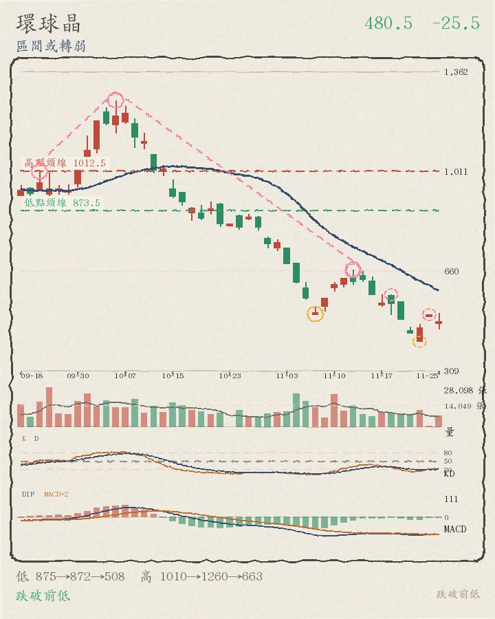
12:31 盤中 538（-6.76%），比加權指數弱 4.46 個百分點、跌破月線 713.5，離高點頸線 1018.75 還差 47.2%，轉折還沒走出明顯方向。
- 月線位置：現價 538 在月線 713.5 之下（-24.6%）；5 日線 615.2 也在月線之下（短均在下）；月線向下
- 量能：以已過交易時間推估，今天成交量約是 20 日均量的 0.90 倍（量平），比 20 日均量少一些
- 關鍵價位：高點頸線 1018.75 還沒突破，差 47.2%；前一交易日高點 638（低於 15.7%）；今天盤中高點 575（低於 6.4%）；今天盤中低點 535（高於 0.6%）
- 轉折結構：低點 875、872、508 與高點 1015、1010、1260 都沒有明顯遞增，屬於區間震盪或轉弱；還沒確認的轉折低點 11-06 508、11-16 575；還沒確認的轉折高點 11-12 663（圖上虛線小圈）
量平
↑ 回上方清單
禾伸堂 3026 上市
415 -46.0（-9.98%）
區間或轉弱 盤中成交值 45.61 億・全榜第 44 名（上市第 34 名）・相對大盤 -7.68
好條件 0/7：無
不好條件 6/7：跌破前低、今日下跌、相對大盤弱、在月線之下、跌破昨日低點、月線下彎

12:31 盤中 415（-9.98%），比加權指數弱 7.68 個百分點、跌破月線 631.775，離高點頸線 847 還差 51.0%，轉折還沒走出明顯方向。
- 月線位置：現價 415 在月線 631.775 之下（-34.3%）；5 日線 509.8 也在月線之下（短均在下）；月線向下
- 量能：以已過交易時間推估，今天成交量約是 20 日均量的 1.19 倍（量增），比 20 日均量大不少；下跌卻量增，量價背離
- 關鍵價位：已跌破前一個轉折低點；高點頸線 847 還在現價上方 51.0%；前一交易日高點 505（低於 17.8%）；今天盤中高點 434（低於 4.4%）；今天盤中低點 415（高於 0.0%）
- 轉折結構：低點 726、704、475.5 與高點 881、888、859 都沒有明顯遞增，屬於區間震盪或轉弱；還沒確認的轉折低點 11-06 475.5、11-16 461；還沒確認的轉折高點 11-12 571（圖上虛線小圈）
群創 3481 上市
35.15 -1.1（-3.17%）
區間或轉弱 盤中成交值 45.38 億・全榜第 45 名（上市第 35 名）・相對大盤 -0.87
好條件 0/7：無
不好條件 5/7：今日下跌、相對大盤弱、在月線之下、跌破昨日低點、月線下彎
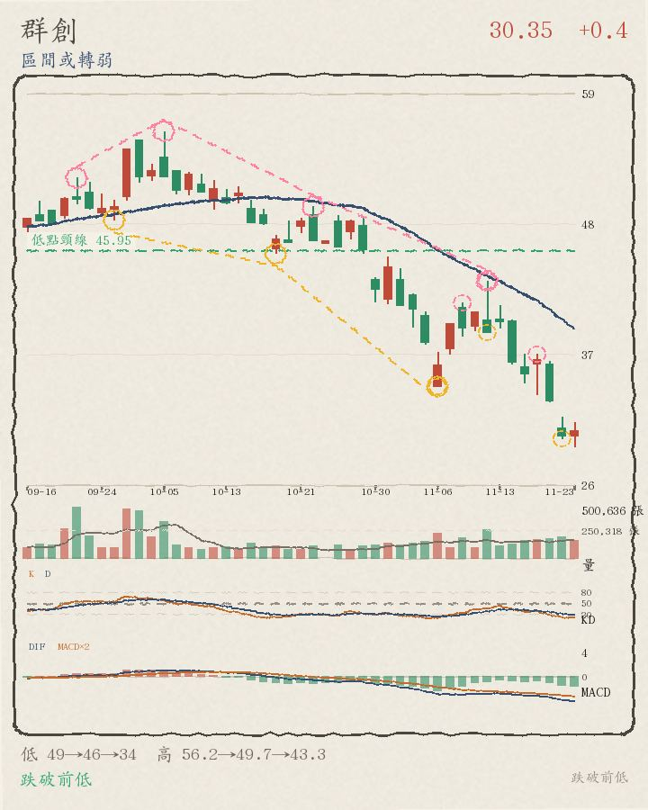
12:31 盤中 35.15（-3.17%），比加權指數弱 0.87 個百分點、跌破月線 42.712，轉折還沒走出明顯方向。
- 月線位置：現價 35.15 在月線 42.712 之下（-17.7%）；5 日線 38.98 也在月線之下（短均在下）；月線向下
- 量能：以已過交易時間推估，今天成交量約是 20 日均量的 1.22 倍（量增），比 20 日均量大不少；下跌卻量增，量價背離
- 關鍵價位：前一交易日高點 39.9（低於 11.9%）；今天盤中高點 37（低於 5.0%）；今天盤中低點 34.5（高於 1.9%）
- 轉折結構：低點 48.55、45.65、34.2 與高點 52.2、56.2、49.7 都沒有明顯遞增，屬於區間震盪或轉弱；還沒確認的轉折低點 11-12 38.85、11-16 36.15；還沒確認的轉折高點 11-10 41.4、11-12 43.3（圖上虛線小圈）
量增
↑ 回上方清單
眾達-KY 4977 上市
179.5 +6.5（+3.76%）
區間或轉弱 盤中成交值 43.06 億・全榜第 46 名（上市第 36 名）・相對大盤 +6.06
好條件 2/7：站上月線、攻擊量（量增＋上漲）
不好條件 1/7：月線下彎

12:31 盤中 179.5（+3.76%），比加權指數強 6.06 個百分點、站上月線 176.8，離高點頸線 193.5 還差 7.2%，轉折還沒走出明顯方向。
- 月線位置：現價 179.5 在月線 176.8 之上（+1.5%）；5 日線 182.8 也在月線之上（短均在上）；月線向下
- 量能：以已過交易時間推估，今天成交量約是 20 日均量的 3.31 倍（爆量），比 20 日均量大不少；上漲又量增，量價配合
- 關鍵價位：高點頸線 193.5 還沒突破，差 7.2%；前一交易日高點 188（低於 4.5%）；今天盤中高點 190（低於 5.5%）；今天盤中低點 163.5（高於 9.8%）
- 轉折結構：低點 165、165、158.5 與高點 195.5、198、192.5 都沒有明顯遞增，屬於區間震盪或轉弱；還沒確認的轉折低點 11-12 174、11-16 170；還沒確認的轉折高點 11-12 192.5、11-13 192.5（圖上虛線小圈）
貿聯-KY 3665 上市
1380 -90.0（-6.12%）
區間或轉弱 盤中成交值 41.8 億・全榜第 47 名（上市第 37 名）・相對大盤 -3.82
好條件 0/7：無
不好條件 5/7：今日下跌、相對大盤弱、在月線之下、跌破昨日低點、月線下彎
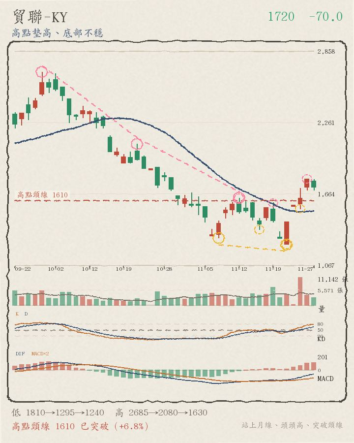
12:31 盤中 1380（-6.12%），比加權指數弱 3.82 個百分點、跌破月線 1653.75，離高點頸線 1652.5 還差 16.5%，轉折還沒走出明顯方向。
- 月線位置：現價 1380 在月線 1653.75 之下（-16.6%）；5 日線 1523 也在月線之下（短均在下）；月線向下
- 量能：以已過交易時間推估，今天成交量約是 20 日均量的 1.24 倍（量增），比 20 日均量大不少；下跌卻量增，量價背離
- 關鍵價位：高點頸線 1652.5 還沒突破，差 16.5%；前一交易日高點 1595（低於 13.5%）；今天盤中高點 1460（低於 5.5%）；今天盤中低點 1365（高於 1.1%）
- 轉折結構：低點 1930、1810、1295 與高點 2375、2685、2080 都沒有明顯遞增，屬於區間震盪或轉弱；還沒確認的轉折低點 11-09 1295、11-16 1445；還沒確認的轉折高點 11-03 1675、11-12 1630（圖上虛線小圈）
量增
↑ 回上方清單
金居 8358 上櫃
317.5 -21.5（-6.34%）
區間或轉弱 盤中成交值 38.49 億・全榜第 48 名（上櫃第 11 名）・相對大盤 -4.04
好條件 0/7：無
不好條件 5/7：今日下跌、相對大盤弱、在月線之下、跌破昨日低點、月線下彎

12:31 盤中 317.5（-6.34%），比加權指數弱 4.04 個百分點、跌破月線 400.25，離高點頸線 420.5 還差 24.5%，轉折還沒走出明顯方向。
- 月線位置：現價 317.5 在月線 400.25 之下（-20.7%）；5 日線 367.7 也在月線之下（短均在下）；月線向下
- 量能：以已過交易時間推估，今天成交量約是 20 日均量的 1.17 倍（量增），比 20 日均量大不少；下跌卻量增，量價背離
- 關鍵價位：高點頸線 420.5 還沒突破，差 24.5%；前一交易日高點 370（低於 14.2%）；今天盤中高點 337（低於 5.8%）；今天盤中低點 309（高於 2.8%）
- 轉折結構：低點 477、399.5、301 與高點 535、578、510 都沒有明顯遞增，屬於區間震盪或轉弱；還沒確認的轉折低點 11-06 301、11-16 339；還沒確認的轉折高點 11-03 428、11-12 413（圖上虛線小圈）
量增
↑ 回上方清單
富邦金 2881 上市
151.5 -0.5（-0.33%）
區間或轉弱 盤中成交值 38.43 億・全榜第 49 名（上市第 38 名）・相對大盤 +1.97
好條件 0/7：無
不好條件 4/7：今日下跌、在月線之下、跌破昨日低點、月線下彎

12:31 盤中 151.5（-0.33%），比加權指數強 1.97 個百分點、跌破月線 157.2，離高點頸線 163.08 還差 7.1%，轉折還沒走出明顯方向。
- 月線位置：現價 151.5 在月線 157.2 之下（-3.6%）；5 日線 157 也在月線之下（短均在下）；月線向下
- 量能：以已過交易時間推估，今天成交量約是 20 日均量的 1.63 倍（爆量），比 20 日均量大不少；下跌卻量增，量價背離
- 關鍵價位：高點頸線 163.08 還沒突破，差 7.1%；前一交易日高點 162.5（低於 6.8%）；今天盤中高點 154.5（低於 1.9%）；今天盤中低點 145（高於 4.5%）
- 轉折結構：低點 147.5、153.5、140 與高點 164.5、164、164 都沒有明顯遞增，屬於區間震盪或轉弱；還沒確認的轉折低點 11-11 150、11-16 152；還沒確認的轉折高點 11-05 159.5、11-13 163.5（圖上虛線小圈）
藥華藥 6446 上市
1275 -20.0（-1.54%）
高點墊高、底部不穩 盤中成交值 38.26 億・全榜第 50 名（上市第 39 名）・相對大盤 +0.76
好條件 3/7：站上月線、月線向上、頭頭高
不好條件 2/7：今日下跌、跌破昨日低點

12:31 盤中 1275（-1.54%），比加權指數強 0.76 個百分點、站上月線 1239.5，離高點頸線 1400 還差 8.9%，高點還在墊高（但底部沒同步墊高）。
- 月線位置：現價 1275 在月線 1239.5 之上（+2.9%）；5 日線 1331 也在月線之上（短均在上）；月線向上
- 量能：以已過交易時間推估，今天成交量約是 20 日均量的 1.23 倍（量增），比 20 日均量大不少；下跌卻量增，量價背離
- 關鍵價位：高點頸線 1400 還沒突破，差 8.9%；前一交易日高點 1385（低於 7.9%）；今天盤中高點 1325（低於 3.8%）；今天盤中低點 1255（高於 1.6%）
- 轉折結構：高點 1235、1300、1255 墊高（頭頭高），但低點 1155、1145、1075 沒有同步墊高；還沒確認的轉折低點 11-11 1235、11-16 1295；還沒確認的轉折高點 11-09 1390、11-12 1410（圖上虛線小圈）
麗臺 2465 上市
147.5 -2.5（-1.67%）
高點墊高、底部不穩 盤中成交值 37.77 億・全榜第 51 名（上市第 40 名）・相對大盤 +0.63
好條件 4/7：站上月線、月線向上、頭頭高、突破頸線
不好條件 2/7：今日下跌、跌破昨日低點
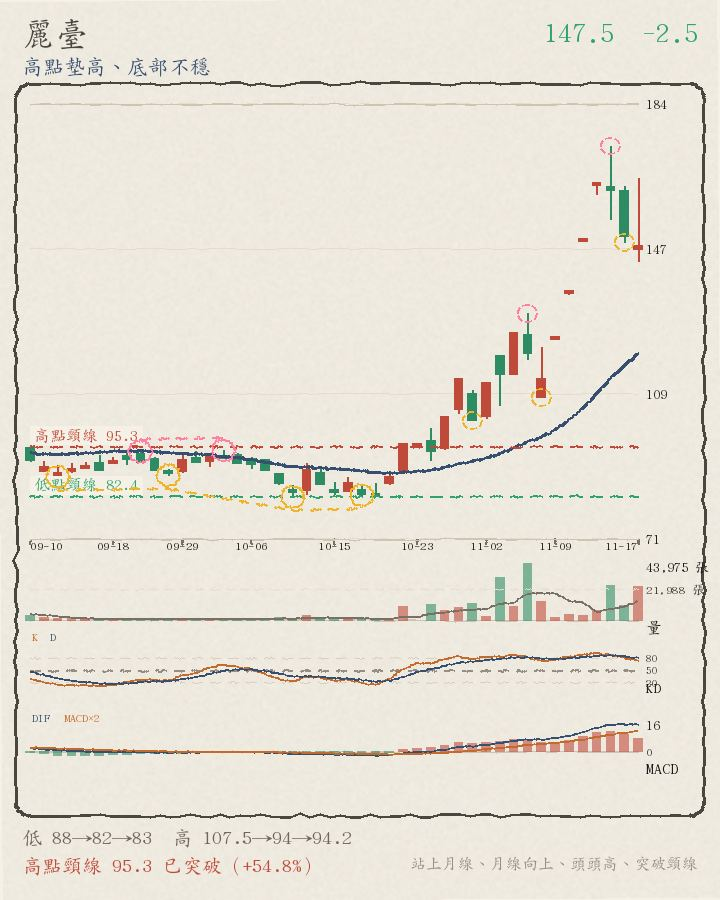
12:31 盤中 147.5（-1.67%），比加權指數強 0.63 個百分點、站上月線 116.315，已突破高點頸線 95.3，高點還在墊高（但底部沒同步墊高）。
- 月線位置：現價 147.5 在月線 116.315 之上（+26.8%）；5 日線 152.3 也在月線之上（短均在上）；月線向上
- 量能：以已過交易時間推估，今天成交量約是 20 日均量的 3.05 倍（爆量），比 20 日均量大不少；下跌卻量增，量價背離
- 關鍵價位：高點頸線 95.3 已站上；前一交易日高點 163（低於 9.5%）；今天盤中高點 165（低於 10.6%）；今天盤中低點 143.5（高於 2.8%）
- 轉折結構：高點 107.5、94、94.2 墊高（頭頭高），但低點 87.8、82.2、82.6 沒有同步墊高；還沒確認的轉折低點 11-06 108、11-16 148.5；還沒確認的轉折高點 11-05 130、11-13 173.5（圖上虛線小圈）
高力 8996 上市
1170 -130.0（-10.00%）
區間或轉弱 盤中成交值 37.56 億・全榜第 52 名（上市第 41 名）・相對大盤 -7.70
好條件 0/7：無
不好條件 5/7：今日下跌、相對大盤弱、在月線之下、跌破昨日低點、月線下彎

12:31 盤中 1170（-10.00%），比加權指數弱 7.70 個百分點、跌破月線 1448，離高點頸線 1555 還差 24.8%，轉折還沒走出明顯方向。
- 月線位置：現價 1170 在月線 1448 之下（-19.2%）；5 日線 1406 也在月線之下（短均在下）；月線向下
- 量能：以已過交易時間推估，今天成交量約是 20 日均量的 0.95 倍（量平），跟 20 日均量差不多
- 關鍵價位：高點頸線 1555 還沒突破，差 24.8%；前一交易日高點 1410（低於 17.0%）；今天盤中高點 1215（低於 3.7%）；今天盤中低點 1170（高於 0.0%）
- 轉折結構：低點 1470、1455、1165 與高點 1665、1800、1770 都沒有明顯遞增，屬於區間震盪或轉弱；還沒確認的轉折低點 11-12 1360、11-16 1300；還沒確認的轉折高點 11-02 1535、11-12 1575（圖上虛線小圈）
量平
↑ 回上方清單
雙鴻 3324 上櫃
927 -103.0（-10.00%）
區間或轉弱 盤中成交值 36.96 億・全榜第 53 名（上櫃第 12 名）・相對大盤 -7.70
好條件 0/7：無
不好條件 6/7：跌破前低、今日下跌、相對大盤弱、在月線之下、跌破昨日低點、月線下彎

12:31 盤中 927（-10.00%），比加權指數弱 7.70 個百分點、跌破月線 1285，離高點頸線 1511.67 還差 38.7%，轉折還沒走出明顯方向。
- 月線位置：現價 927 在月線 1285 之下（-27.9%）；5 日線 1175 也在月線之下（短均在下）；月線向下
- 量能：以已過交易時間推估，今天成交量約是 20 日均量的 1.09 倍（量平），比 20 日均量大一些
- 關鍵價位：已跌破前一個轉折低點；高點頸線 1511.67 還在現價上方 38.7%；前一交易日高點 1125（低於 17.6%）；今天盤中高點 975（低於 4.9%）；今天盤中低點 927（高於 0.0%）
- 轉折結構：低點 1320、1310、1050 與高點 1515、1515、1315 都沒有明顯遞增，屬於區間震盪或轉弱；還沒確認的轉折低點 11-09 1050、11-16 1030；還沒確認的轉折高點 11-03 1445、11-11 1315（圖上虛線小圈）
力積電 6770 上市
51.4 -2.3（-4.28%）
區間或轉弱 盤中成交值 36.83 億・全榜第 54 名（上市第 42 名）・相對大盤 -1.98
好條件 0/7：無
不好條件 5/7：今日下跌、相對大盤弱、在月線之下、跌破昨日低點、月線下彎

12:31 盤中 51.4（-4.28%），比加權指數弱 1.98 個百分點、跌破月線 62.02，離高點頸線 74.33 還差 30.8%，轉折還沒走出明顯方向。
- 月線位置：現價 51.4 在月線 62.02 之下（-17.1%）；5 日線 56.9 也在月線之下（短均在下）；月線向下
- 量能：以已過交易時間推估，今天成交量約是 20 日均量的 0.87 倍（量平），比 20 日均量少一些
- 關鍵價位：高點頸線 74.33 還沒突破，差 30.8%；前一交易日高點 56.5（低於 9.0%）；今天盤中高點 54（低於 4.8%）；今天盤中低點 50.2（高於 2.4%）
- 轉折結構：低點 70.5、63、49.35 與高點 78.1、73、63 都沒有明顯遞增，屬於區間震盪或轉弱；還沒確認的轉折低點 11-11 55.9、11-16 53；還沒確認的轉折高點 11-10 63、11-12 60.4（圖上虛線小圈）
量平
↑ 回上方清單
旺宏 2337 上市
71.5 -0.5（-0.69%）
區間或轉弱 盤中成交值 33.86 億・全榜第 55 名（上市第 43 名）・相對大盤 +1.61
好條件 0/7：無
不好條件 5/7：跌破前低、今日下跌、在月線之下、跌破昨日低點、月線下彎

12:31 盤中 71.5（-0.69%），比加權指數強 1.61 個百分點、跌破月線 90.56，離高點頸線 86.7 還差 17.5%，轉折還沒走出明顯方向。
- 月線位置：現價 71.5 在月線 90.56 之下（-21.1%）；5 日線 78.96 也在月線之下（短均在下）；月線向下
- 量能：以已過交易時間推估，今天成交量約是 20 日均量的 1.43 倍（量增），比 20 日均量大不少；下跌卻量增，量價背離
- 關鍵價位：已跌破前一個轉折低點；高點頸線 86.7 還在現價上方 17.5%；前一交易日高點 78.5（低於 8.9%）；今天盤中高點 73.7（低於 3.0%）；今天盤中低點 67.7（高於 5.6%）
- 轉折結構：低點 114.5、99.2、71.8 與高點 123、107.5、88.2 都沒有明顯遞增，屬於區間震盪或轉弱；還沒確認的轉折低點 11-12 78.2、11-16 71.8；還沒確認的轉折高點 11-10 88.2、11-12 85.2（圖上虛線小圈）
頎邦 6147 上櫃
141.5 -13.0（-8.41%）
區間或轉弱 盤中成交值 33.13 億・全榜第 56 名（上櫃第 13 名）・相對大盤 -6.11
好條件 0/7：無
不好條件 6/7：跌破前低、今日下跌、相對大盤弱、在月線之下、跌破昨日低點、月線下彎

12:31 盤中 141.5（-8.41%），比加權指數弱 6.11 個百分點、跌破月線 184.425，離高點頸線 220 還差 35.7%，轉折還沒走出明顯方向。
- 月線位置：現價 141.5 在月線 184.425 之下（-23.3%）；5 日線 167.1 也在月線之下（短均在下）；月線向下
- 量能：以已過交易時間推估，今天成交量約是 20 日均量的 1.35 倍（量增），比 20 日均量大不少；下跌卻量增，量價背離
- 關鍵價位：已跌破前一個轉折低點；高點頸線 220 還在現價上方 35.7%；前一交易日高點 170（低於 16.8%）；今天盤中高點 152（低於 6.9%）；今天盤中低點 139.5（高於 1.4%）
- 轉折結構：低點 211、194.5、142 與高點 238、217、223 都沒有明顯遞增，屬於區間震盪或轉弱；還沒確認的轉折低點 11-06 142、11-16 154.5；還沒確認的轉折高點 11-12 180（圖上虛線小圈）
中信金 2891 上市
78.5 +1.7（+2.21%）
高點墊高、底部不穩 盤中成交值 32.67 億・全榜第 57 名（上市第 44 名）・相對大盤 +4.51
好條件 5/7：站上月線、月線向上、頭頭高、突破頸線、攻擊量（量增＋上漲）
不好條件 0/7：無

12:31 盤中 78.5（+2.21%），比加權指數強 4.51 個百分點、站上月線 74.79，已突破高點頸線 75.96，高點還在墊高（但底部沒同步墊高）。
- 月線位置：現價 78.5 在月線 74.79 之上（+5.0%）；5 日線 75.86 也在月線之上（短均在上）；月線向上
- 量能：以已過交易時間推估，今天成交量約是 20 日均量的 1.21 倍（量增），比 20 日均量大不少；上漲又量增，量價配合
- 關鍵價位：高點頸線 75.96 已站上；前一交易日高點 80.6（低於 2.6%）；今天盤中高點 79.4（低於 1.1%）；今天盤中低點 75.1（高於 4.5%）
- 轉折結構：高點 76.9、76.4、76.2 墊高（頭頭高），但低點 67.3、73.8、67.5 沒有同步墊高；還沒確認的轉折低點 11-06 67.5、11-11 72.6；還沒確認的轉折高點 11-09 76.2、11-16 80.6（圖上虛線小圈）
國泰金 2882 上市
112 +2.0（+1.82%）
區間或轉弱 盤中成交值 32.49 億・全榜第 58 名（上市第 45 名）・相對大盤 +4.12
好條件 1/7：攻擊量（量增＋上漲）
不好條件 2/7：在月線之下、月線下彎
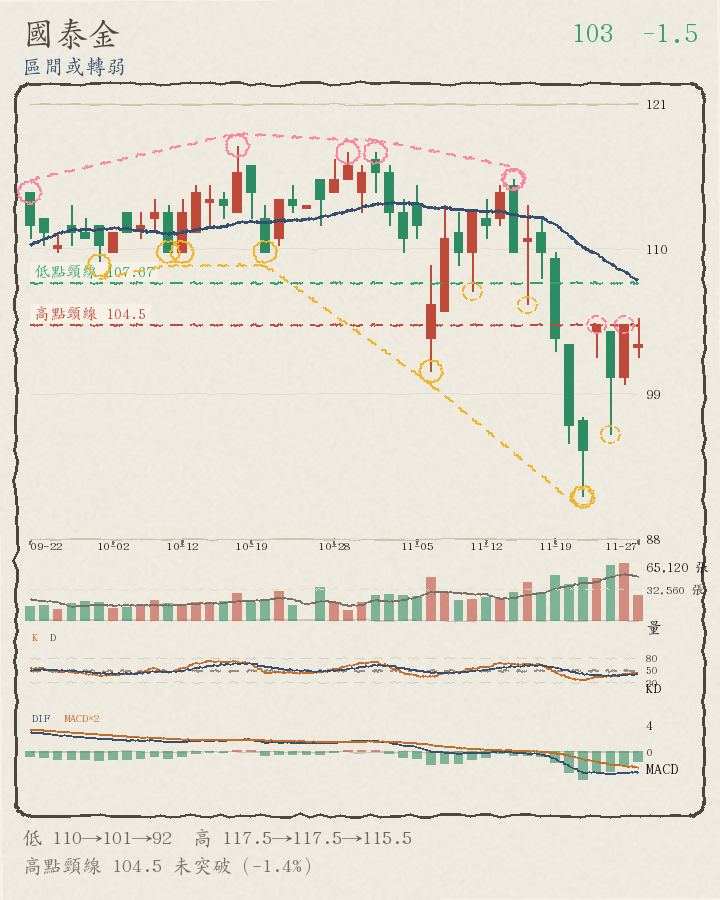
12:31 盤中 112（+1.82%），比加權指數強 4.12 個百分點、跌破月線 112.8，離高點頸線 116.17 還差 3.6%，轉折還沒走出明顯方向。
- 月線位置：現價 112 在月線 112.8 之下（-0.7%）；5 日線 111.9 也在月線之下（短均在下）；月線向下
- 量能：以已過交易時間推估，今天成交量約是 20 日均量的 1.42 倍（量增），比 20 日均量大不少；上漲又量增，量價配合
- 關鍵價位：高點頸線 116.17 還沒突破，差 3.6%；前一交易日高點 115.5（低於 3.0%）；今天盤中高點 113.5（低於 1.3%）；今天盤中低點 106（高於 5.7%）
- 轉折結構：低點 110、110、101 與高點 118、117.5、117.5 都沒有明顯遞增，屬於區間震盪或轉弱；還沒確認的轉折低點 11-11 107、11-16 110；還沒確認的轉折高點 11-09 113.5、11-16 115.5（圖上虛線小圈）
大量 3167 上市
668 -74.0（-9.97%）
區間或轉弱 盤中成交值 29.48 億・全榜第 59 名（上市第 46 名）・相對大盤 -7.67
好條件 0/7：無
不好條件 6/7：跌破前低、今日下跌、相對大盤弱、在月線之下、跌破昨日低點、月線下彎

12:31 盤中 668（-9.97%），比加權指數弱 7.67 個百分點、跌破月線 881.25，離高點頸線 965.5 還差 30.8%，轉折還沒走出明顯方向。
- 月線位置：現價 668 在月線 881.25 之下（-24.2%）；5 日線 825.4 也在月線之下（短均在下）；月線向下
- 量能：以已過交易時間推估，今天成交量約是 20 日均量的 1.10 倍（量增），比 20 日均量大一些；下跌卻量增，量價背離
- 關鍵價位：已跌破前一個轉折低點；高點頸線 965.5 還在現價上方 30.8%；前一交易日高點 820（低於 18.5%）；今天盤中高點 704（低於 5.1%）；今天盤中低點 668（高於 0.0%）
- 轉折結構：低點 884、700、700 與高點 1090、1030、1030 都沒有明顯遞增，屬於區間震盪或轉弱；還沒確認的轉折低點 11-09 700、11-16 742；還沒確認的轉折高點 11-12 960（圖上虛線小圈）
力旺 3529 上櫃
2175 +25.0（+1.16%）
區間或轉弱 盤中成交值 29.01 億・全榜第 60 名（上櫃第 14 名）・相對大盤 +3.46
好條件 1/7：攻擊量（量增＋上漲）
不好條件 2/7：在月線之下、月線下彎
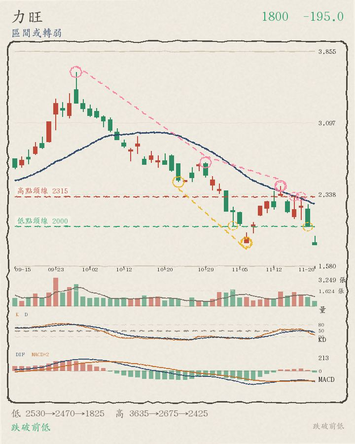
12:31 盤中 2175（+1.16%），比加權指數強 3.46 個百分點、跌破月線 2346.25，離高點頸線 2806.67 還差 22.5%，轉折還沒走出明顯方向。
- 月線位置：現價 2175 在月線 2346.25 之下（-7.3%）；5 日線 2235 也在月線之下（短均在下）；月線向下
- 量能：以已過交易時間推估，今天成交量約是 20 日均量的 1.75 倍（爆量），比 20 日均量大不少；上漲又量增，量價配合
- 關鍵價位：高點頸線 2806.67 還沒突破，差 22.5%；前一交易日高點 2280（低於 4.6%）；今天盤中高點 2315（低於 6.0%）；今天盤中低點 2080（高於 4.6%）
- 轉折結構：低點 2530、2470、1825 與高點 2875、3635、2675 都沒有明顯遞增，屬於區間震盪或轉弱；還沒確認的轉折低點 11-06 1825、11-16 2140；還沒確認的轉折高點 11-13 2425（圖上虛線小圈）
光寶科 2301 上市
207 -6.0（-2.82%）
區間或轉弱 盤中成交值 26.99 億・全榜第 61 名（上市第 47 名）・相對大盤 -0.52
好條件 0/7：無
不好條件 5/7：今日下跌、相對大盤弱、在月線之下、跌破昨日低點、月線下彎

12:31 盤中 207（-2.82%），比加權指數弱 0.52 個百分點、跌破月線 238.825，離高點頸線 243.17 還差 14.9%，轉折還沒走出明顯方向。
- 月線位置：現價 207 在月線 238.825 之下（-13.3%）；5 日線 229 也在月線之下（短均在下）；月線向下
- 量能：以已過交易時間推估，今天成交量約是 20 日均量的 1.08 倍（量平），比 20 日均量大一些
- 關鍵價位：高點頸線 243.17 還沒突破，差 14.9%；前一交易日高點 231（低於 10.4%）；今天盤中高點 213.5（低於 3.0%）；今天盤中低點 202（高於 2.5%）
- 轉折結構：低點 278、254、190.5 與高點 328、299.5、304.5 都沒有明顯遞增，屬於區間震盪或轉弱；還沒確認的轉折低點 11-12 227.5、11-16 212；還沒確認的轉折高點 11-10 239、11-12 243.5（圖上虛線小圈）
量平
↑ 回上方清單
華碩 2357 上市
823 -13.0（-1.56%）
區間或轉弱 盤中成交值 26.95 億・全榜第 62 名（上市第 48 名）・相對大盤 +0.74
好條件 0/7：無
不好條件 4/7：今日下跌、在月線之下、跌破昨日低點、月線下彎
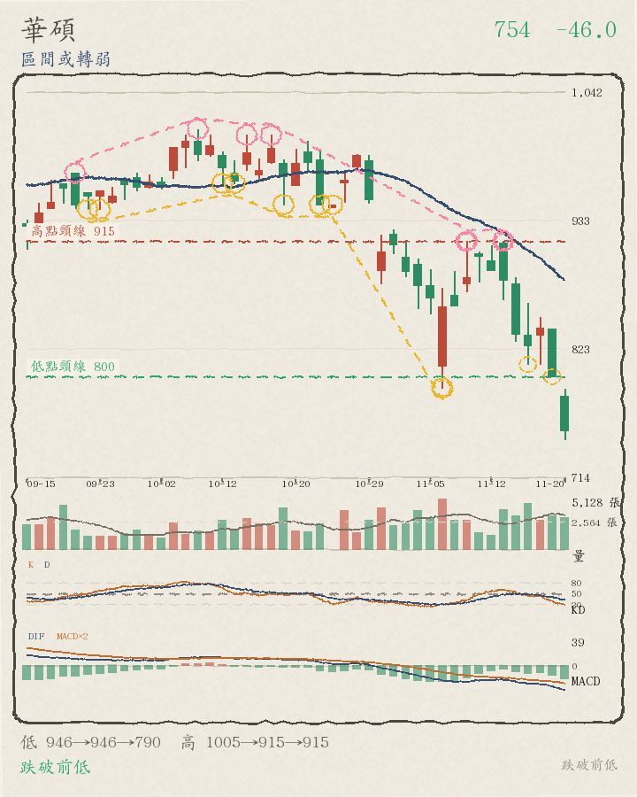
12:31 盤中 823（-1.56%），比加權指數強 0.74 個百分點、跌破月線 914.7，離高點頸線 918.33 還差 10.4%，轉折還沒走出明顯方向。
- 月線位置：現價 823 在月線 914.7 之下（-10.0%）；5 日線 878.8 也在月線之下（短均在下）；月線向下
- 量能：以已過交易時間推估，今天成交量約是 20 日均量的 1.44 倍（量增），比 20 日均量大不少；下跌卻量增，量價背離
- 關鍵價位：高點頸線 918.33 還沒突破，差 10.4%；前一交易日高點 884（低於 6.9%）；今天盤中高點 862（低於 4.5%）；今天盤中低點 810（高於 1.6%）
- 轉折結構：低點 946、946、790 與高點 1005、1005、915 都沒有明顯遞增，屬於區間震盪或轉弱；還沒確認的轉折低點 11-06 790、11-16 830；還沒確認的轉折高點 11-10 915、11-13 915（圖上虛線小圈）
量增
↑ 回上方清單
廣達 2382 上市
261.5 -3.0（-1.13%）
區間或轉弱 盤中成交值 26.06 億・全榜第 63 名（上市第 49 名）・相對大盤 +1.17
好條件 0/7：無
不好條件 5/7：跌破前低、今日下跌、在月線之下、跌破昨日低點、月線下彎

12:31 盤中 261.5（-1.13%），比加權指數強 1.17 個百分點、跌破月線 306.8，離高點頸線 304 還差 14.0%，轉折還沒走出明顯方向。
- 月線位置：現價 261.5 在月線 306.8 之下（-14.8%）；5 日線 283.2 也在月線之下（短均在下）；月線向下
- 量能：以已過交易時間推估，今天成交量約是 20 日均量的 0.89 倍（量平），比 20 日均量少一些
- 關鍵價位：已跌破前一個轉折低點；高點頸線 304 還在現價上方 14.0%；前一交易日高點 276.5（低於 5.4%）；今天盤中高點 269（低於 2.8%）；今天盤中低點 255（高於 2.5%）
- 轉折結構：低點 311、311、272 與高點 349、337.5、338 都沒有明顯遞增，屬於區間震盪或轉弱；還沒確認的轉折低點 11-06 272、11-16 262.5；還沒確認的轉折高點 11-09 304、11-10 304（圖上虛線小圈）
中華電 2412 上市
164 +0.5（+0.31%）
高點墊高、底部不穩 盤中成交值 26.02 億・全榜第 64 名（上市第 50 名）・相對大盤 +2.61
好條件 4/7：站上月線、月線向上、頭頭高、攻擊量（量增＋上漲）
不好條件 0/7：無

12:31 盤中 164（+0.31%），比加權指數強 2.61 個百分點、站上月線 159.325，離高點頸線 165.33 還差 0.8%，高點還在墊高（但底部沒同步墊高）。
- 月線位置：現價 164 在月線 159.325 之上（+2.9%）；5 日線 162.2 也在月線之上（短均在上）；月線向上
- 量能：以已過交易時間推估，今天成交量約是 20 日均量的 1.46 倍（量增），比 20 日均量大不少；上漲又量增，量價配合
- 關鍵價位：高點頸線 165.33 還沒突破，差 0.8%；前一交易日高點 168（低於 2.4%）；今天盤中高點 166.5（低於 1.5%）；今天盤中低點 162（高於 1.2%）
- 轉折結構：高點 146、147、166.5 墊高（頭頭高），但低點 156.5、156.5、156.5 沒有同步墊高；還沒確認的轉折低點 11-10 156.5、11-11 156.5；還沒確認的轉折高點 11-05 166.5、11-16 168（圖上虛線小圈）
萬潤 6187 上櫃
773 -85.0（-9.91%）
區間或轉弱 盤中成交值 22.93 億・全榜第 65 名（上櫃第 15 名）・相對大盤 -7.61
好條件 0/7：無
不好條件 6/7：跌破前低、今日下跌、相對大盤弱、在月線之下、跌破昨日低點、月線下彎
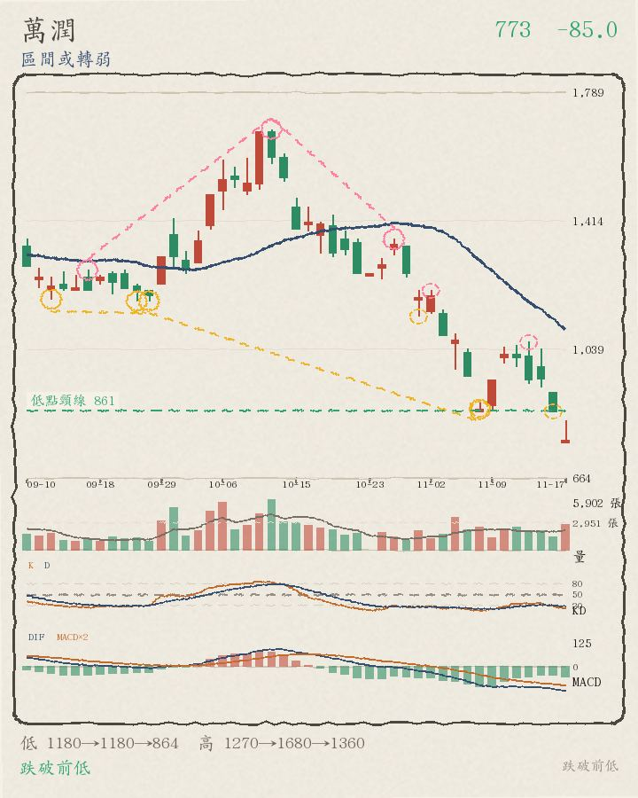
12:31 盤中 773（-9.91%），比加權指數弱 7.61 個百分點、跌破月線 1128.45，轉折還沒走出明顯方向。
- 月線位置：現價 773 在月線 1128.45 之下（-31.5%）；5 日線 960.2 也在月線之下（短均在下）；月線向下
- 量能：以已過交易時間推估，今天成交量約是 20 日均量的 1.76 倍（爆量），比 20 日均量大不少；下跌卻量增，量價背離
- 關鍵價位：前一交易日高點 914（低於 15.4%）；今天盤中高點 831（低於 7.0%）；今天盤中低點 773（高於 0.0%）
- 轉折結構：低點 1180、1180、864 與高點 1270、1680、1360 都沒有明顯遞增，屬於區間震盪或轉弱；還沒確認的轉折低點 11-06 864、11-16 858；還沒確認的轉折高點 11-02 1210、11-12 1060（圖上虛線小圈）
精測 6510 上櫃
2710 -295.0（-9.82%）
高點墊高、底部不穩 盤中成交值 22.79 億・全榜第 66 名（上櫃第 16 名）・相對大盤 -7.52
好條件 1/7：頭頭高
不好條件 6/7：今日下跌、相對大盤弱、在月線之下、貼近今日低點（1% 內）、跌破昨日低點、月線下彎

12:31 盤中 2710（-9.82%），比加權指數弱 7.52 個百分點、跌破月線 2920，離高點頸線 3542.5 還差 23.5%，高點還在墊高（但底部沒同步墊高）。
- 月線位置：現價 2710 在月線 2920 之下（-7.2%）；5 日線 3076 也在月線之上（短均在上）；月線向下
- 量能：以已過交易時間推估，今天成交量約是 20 日均量的 1.30 倍（量增），比 20 日均量大不少；下跌卻量增，量價背離
- 關鍵價位：高點頸線 3542.5 還沒突破，差 23.5%；前一交易日高點 3330（低於 18.6%）；今天盤中高點 2880（低於 5.9%）；今天盤中低點 2705（高於 0.2%）
- 轉折結構：高點 3775、3580、3345 墊高（頭頭高），但低點 3000、2825、2250 沒有同步墊高；還沒確認的轉折低點 11-06 2250、11-16 3005；還沒確認的轉折高點 11-02 2980、11-13 3505（圖上虛線小圈）
宜鼎 5289 上櫃
834 -32.0（-3.70%）
區間或轉弱 盤中成交值 21.67 億・全榜第 67 名（上櫃第 17 名）・相對大盤 -1.40
好條件 0/7：無
不好條件 6/7：跌破前低、今日下跌、相對大盤弱、在月線之下、跌破昨日低點、月線下彎

12:31 盤中 834（-3.70%），比加權指數弱 1.40 個百分點、跌破月線 1034.8，離高點頸線 1017.5 還差 18.0%，轉折還沒走出明顯方向。
- 月線位置：現價 834 在月線 1034.8 之下（-19.4%）；5 日線 949.6 也在月線之下（短均在下）；月線向下
- 量能：以已過交易時間推估，今天成交量約是 20 日均量的 1.95 倍（爆量），比 20 日均量大不少；下跌卻量增，量價背離
- 關鍵價位：已跌破前一個轉折低點；高點頸線 1017.5 還在現價上方 18.0%；前一交易日高點 957（低於 12.9%）；今天盤中高點 864（低於 3.5%）；今天盤中低點 780（高於 6.9%）
- 轉折結構：低點 1065、1065、851 與高點 1535、1375、1205 都沒有明顯遞增，屬於區間震盪或轉弱；還沒確認的轉折低點 11-06 851、11-16 866；還沒確認的轉折高點 11-10 1010、11-12 1025（圖上虛線小圈）
大甲 2221 上櫃
148 -3.5（-2.31%）
上升趨勢（底底高＋頭頭高） 盤中成交值 17.91 億・全榜第 68 名（上櫃第 18 名）・相對大盤 -0.01
好條件 4/7：站上月線、月線向上、底底高、頭頭高
不好條件 2/7：今日下跌、相對大盤弱

12:31 盤中 148（-2.31%），比加權指數弱 0.01 個百分點、站上月線 141.4，離高點頸線 155 還差 4.5%，轉折結構仍是底底高＋頭頭高。
- 月線位置：現價 148 在月線 141.4 之上（+4.7%）；5 日線 154.4 也在月線之上（短均在上）；月線向上
- 量能：以已過交易時間推估，今天成交量約是 20 日均量的 2.28 倍（爆量），比 20 日均量大不少；下跌卻量增，量價背離
- 關鍵價位：高點頸線 155 還沒突破，差 4.5%；前一交易日高點 159.5（低於 7.2%）；今天盤中高點 157.5（低於 6.0%）；今天盤中低點 146（高於 1.4%）
- 轉折結構：低點 110、123.5、126.5 一路墊高、高點 195、195、168 也一路墊高，是底底高＋頭頭高；還沒確認的轉折低點 11-06 128.5、11-16 145；還沒確認的轉折高點 11-06 155、11-12 181（圖上虛線小圈）
威剛 3260 上櫃
276 -2.0（-0.72%）
區間或轉弱 盤中成交值 16.02 億・全榜第 69 名（上櫃第 19 名）・相對大盤 +1.58
好條件 0/7：無
不好條件 4/7：今日下跌、在月線之下、跌破昨日低點、月線下彎
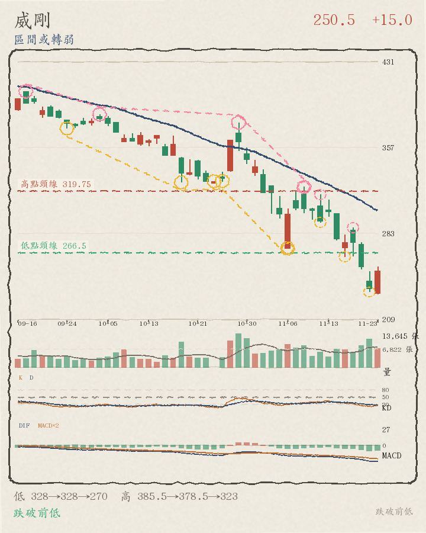
12:31 盤中 276（-0.72%），比加權指數強 1.58 個百分點、跌破月線 321.2，離高點頸線 319.75 還差 13.7%，轉折還沒走出明顯方向。
- 月線位置：現價 276 在月線 321.2 之下（-14.1%）；5 日線 296.4 也在月線之下（短均在下）；月線向下
- 量能：以已過交易時間推估，今天成交量約是 20 日均量的 1.08 倍（量平），比 20 日均量大一些
- 關鍵價位：高點頸線 319.75 還沒突破，差 13.7%；前一交易日高點 300（低於 8.0%）；今天盤中高點 282（低於 2.1%）；今天盤中低點 263（高於 4.9%）
- 轉折結構：低點 328、328、270 與高點 385.5、378.5、323 都沒有明顯遞增，屬於區間震盪或轉弱；還沒確認的轉折低點 11-12 292.5、11-16 277；還沒確認的轉折高點 11-10 323、11-12 316.5（圖上虛線小圈）
量平
↑ 回上方清單
巨有科技 8227 上櫃
228 +2.0（+0.88%）
區間或轉弱 盤中成交值 15.43 億・全榜第 70 名（上櫃第 20 名）・相對大盤 +3.18
好條件 2/7：突破頸線、攻擊量（量增＋上漲）
不好條件 2/7：在月線之下、月線下彎
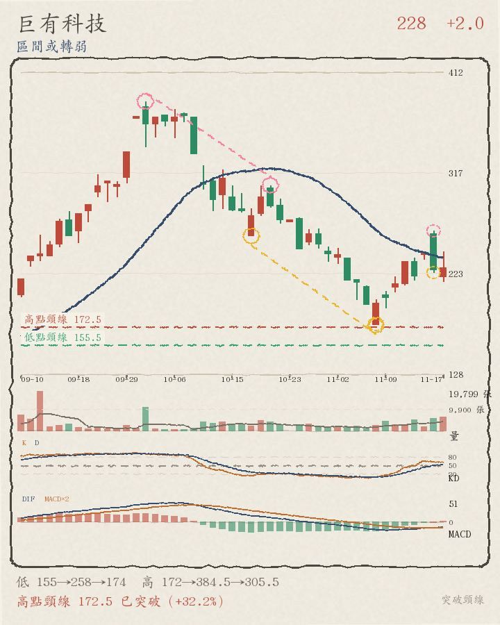
12:31 盤中 228（+0.88%），比加權指數強 3.18 個百分點、跌破月線 239.925，已突破高點頸線 172.5，轉折還沒走出明顯方向。
- 月線位置：現價 228 在月線 239.925 之下（-5.0%）；5 日線 227.2 也在月線之下（短均在下）；月線向下
- 量能：以已過交易時間推估，今天成交量約是 20 日均量的 3.02 倍（爆量），比 20 日均量大不少；上漲又量增，量價配合
- 關鍵價位：高點頸線 172.5 已站上；前一交易日高點 263（低於 13.3%）；今天盤中高點 243（低於 6.2%）；今天盤中低點 215（高於 6.0%）
- 轉折結構：低點 155、258、174.5 與高點 172、384.5、305.5 都沒有明顯遞增，屬於區間震盪或轉弱；還沒確認的轉折低點 11-06 174.5、11-16 223.5；還沒確認的轉折高點 11-16 263（圖上虛線小圈）